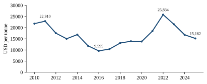
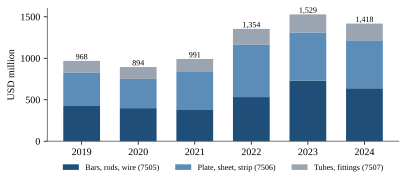
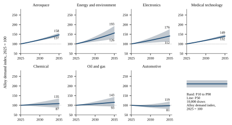

Forging the Future: Market Intelligence and Growth Strategy
for High-Performance Metals Through 2035
Technical University of Munich · Campus Heilbronn
TUM School of Management
Münvest Project Studies
Prof. Dr. Miriam Bird
Professorship for Entrepreneurship and Family Enterprise
Dr. Nicolas Seitz
Münvest
6 December 2026
Table of Contents
For centuries, metals have been among the materials on which human societies are built, from cities and transport networks to power grids, machinery and the technologies of modern economies. Their uses have widened with each wave of industrial development, and the sector remains large: according to McKinsey & Company's Global Materials Perspective, the metals and mining industry generated about USD 3.0 trillion in revenue in 2024 after a decline of 6 percent and grew by only about 1 percent in 2025 (McKinsey & Company, 2025, 2026).
Within this broad market, high performance alloys serve the conditions that ordinary materials cannot withstand, such as the hot section of a jet engine, a sour gas well, a chemical reactor or a permanent implant. These engineered materials combine nickel, cobalt, chromium, molybdenum, titanium, tungsten and other elements to provide strength at high temperature, corrosion and oxidation resistance or biocompatibility, and they reach industry as qualified bar, billet, sheet, strip, wire, tube and powder. Their raw materials, however, come from a small number of countries, as Indonesia mines about 63 percent of the world's nickel, the Democratic Republic of the Congo about 73 percent of its cobalt and China most of its tungsten (International Energy Agency, 2026b; U.S. Geological Survey, 2026a, 2026e).
The outlook for these alloys to 2035 is positive but uneven, and its size is still poorly measured. Commercial estimates place the segment between about USD 10 billion and USD 14 billion in 2025, a spread that reflects different market boundaries rather than different markets (IMARC Group, 2025; The Insight Partners, 2025). Part of the future demand is already visible in engine and turbine programmes, energy investment and the supply of alloying metals that export policy increasingly shapes, while another part depends on technologies such as hydrogen turbines, advanced reactors and additive manufacturing that official statistics do not yet capture. This study therefore measures the first part from official production, trade and industry data and treats the second as a set of emerging opportunities whose evidence and timing are assessed openly rather than hidden in a single headline figure.
This project follows selected metals that are essential to high performance alloys from the mine to the industrial applications that depend on them, to assess how their markets may develop through 2035. It asks one central question: how do the concentration of metal supply, the conversion of metals into qualified product forms and the needs of seven industries determine where the most attractive opportunities in high performance materials will lie through 2035? Four subsidiary questions structure the answer, on supply and product forms, on demand by industry and region and its measurable size, on growth to 2035 and its certainty, and on where supply security, growth and entry barriers combine into the best opportunities.
The scope covers ten metals, namely nickel, cobalt, chromium, molybdenum, titanium, tungsten, zirconium, copper, aluminium and manganese, and seven industries, namely automotive, oil and gas, energy and environmental technology, aerospace, chemical processing, electronics and electrical engineering, and medical technology. The analysis is global, with regional comparisons for Europe, North America and Asia, and it uses the most recent official data available in November 2026. The outlook separates a quantified estimate for established applications from a structured assessment of emerging ones that official statistics do not yet capture.
The report argues that value in this market is created by converting metals into qualified products rather than by mining them. Nickel is in surplus, while cobalt, tungsten and molybdenum are constrained by export policy, and the countries that convert metals into qualified bar, strip and tube earn trade surpluses that the mining countries do not. The tier 1 model puts 2035 alloy demand at P50 indices of 141 in electronics and 136 in medical technology, with aerospace at 134 and energy technology at 133 close behind, while automotive reaches only 102 and oil and gas 98, with 2025 at 100 (Product Strategy 2035 Team, 2026a). Only triple melt engine bar and billet for aero engine forgers in the United States and Europe reaches priority 1, and the rank is fragile because aerospace growth of 2.98 percent a year sits at the edge of a scoring band (Product Strategy 2035 Team, 2026a). Turbine remelt stock, CoCr implant bar and Alloy 690 bar and hollows follow as priority 2, precision FeNi foil for East Asian mask makers remains a gated option because no foil volume is measured, and emerging applications stay in a register of options with signposts. Producers should in turn stop investing in diesel only engine parts, European base chemical new build, electrolyser capacity before funded orders and captive nuclear cladding zirconium. Chapter 3 explains how this argument is tested, chapters 4 to 7 follow the metals from supply through industry demand and trade to growth, chapter 8 ranks the opportunities and chapter 9 concludes.
The analysis follows a metal value chain from material through product form, application, industry and geography to market size and growth, and Table 1 shows how the chapters cover its seven links. Figures are only compared within one stage, so contained metal is kept apart from gross weight and output from capacity, and mine output, melt, mill products and revenue are never added into one market value. The evidence starts with structured statistics from the USGS, UN Comtrade, Eurostat PRODCOM, the World Bank, OECD, UNIDO and the IEA, continues with industry associations, official outlooks and the 61 company profiles, and uses commercial market reports only as a cross check. Figures that carry the argument are checked against a second source where one exists, and single source figures are flagged in the source register, which records the unit, stage, data type, source and formula of every value.
Table 1: The metal value chain and its evidence
| Link | Guiding question | Main evidence | Chapter |
|---|---|---|---|
| Material | Where is supply, and how concentrated is it? | USGS, IEA, World Bank prices | 4 |
| Product form | In which qualified forms does the metal reach industry? | PRODCOM, producer filings | 4 |
| Application | Which components need the material, and why? | Standards, associations, filings | 4 and 5 |
| Industry | Which industries buy, and how fast do they grow? | Airbus, Boeing, IEA, OICA, Cefic, SEMI | 5 |
| Geography | In which regions are the forms bought and made? | IEA regions, OECD, UN Comtrade | 5 and 6 |
| Market size | How large is measurable demand today? | Apparent consumption, trade values | 5 and 6 |
| Growth | How large could demand be in 2035? | Demand model, emerging options register | 7 |
Source: team framework.
The outlook to 2035 is built in two tiers that are never mixed. The first tier is a demand model for established applications, which multiplies the activity of each industry, such as engine deliveries, gigawatts of gas turbines or joint replacements, by the metal content per unit and by the share of units that use a high performance alloy. This model is anchored on measured 2025 values such as the cobalt used in aviation, back tested by fitting trends on data up to 2019 and comparing them with outcomes for 2020 to 2025, and tested against earlier official outlooks where they exist, while a Monte Carlo simulation yields the 10th, 50th and 90th percentiles of 2035 demand and a supply overlay tests them against export quota and licence shocks.
The second tier covers opportunities that the data cannot yet confirm, such as hydrogen fuelled turbines, supercritical carbon dioxide recuperators, molten salt and small modular reactors, fusion magnet substrate tape or additively manufactured engine parts. Each candidate is drawn from patents, pilot plants, standards under development or announced projects and assessed on its technology readiness, evidence, required alloys and product forms and earliest date of commercial volume. These options form a separate register with signposts, such as a final investment decision or a first serial order, that would move them into the model, and chapter 8 scores both tiers on the same eight criteria while flagging the evidence behind each score, so that measured positions are never confused with options to monitor rather than fund.
Every high performance alloy begins as raw materials that the alloy maker does not control, so this chapter follows ten metals through the first three links of the chain, material, product form and application. Table 2 condenses them into a scorecard that already shows the pattern: supply is concentrated in a few countries, while the qualified product forms are made elsewhere.
Table 2: Metal scorecard along the first three links, 2025
| Metal | Material: world output and largest producer | Price signal | Main product forms | Key high performance applications | Supply risk to 2035 |
|---|---|---|---|---|---|
| Nickel | 3.90 Mt contained, Indonesia 67% (USGS), or 4.21 Mt and 63% (IEA) | USD 15,162/t, 41% below the 2022 average | Strip, sheet, plate, bar, wire, tube | Corrosion and heat resistant alloys, superalloys | Medium, Indonesian ore quotas |
| Cobalt | 310 kt contained, DR Congo 73% | Metal up 130% in 2025 | Alloy grade metal, bar, sheet, powder | Superalloys, CoCr implants, wear alloys | High, Congolese export quota |
| Chromium | 51 Mt chromite ore, South Africa about 45% | Chromium metal up, ferrochrome down | Ferrochrome, chromium metal | Every corrosion and oxidation resistant alloy | Medium, smelting in China |
| Molybdenum | 260 kt contained, China about 37% | USD 51/kg oxide, up 7% | Oxide, ferromolybdenum, metal | Pitting resistance in C-276, 625 and 6Mo grades | Medium, Chinese licences on powders |
| Titanium | 370 kt sponge, China about 70% | USD 12/kg U.S. sponge import value | Sponge, ingot, bar, plate | Airframes, engine cold sections, implants | High for aerospace grade sponge |
| Tungsten | 85 kt contained, China about 79% | Rising under export licences | APT, carbide, metal | Cast superalloys, heat resistant sheet | High, Chinese quotas and licences |
| Zirconium | 1.2 Mt concentrates, Australia about 33% | USD 1,800/t premium zircon | Sponge, plate, tube | Acid service equipment, fuel cladding | Medium, nuclear grade is captive |
| Copper | 23.2 Mt mine, 28.6 Mt refined | USD 9,947/t 2025 average, record above USD 14,500 in 2026 | Cathode, wire rod, strip, foil | Busbars, connectors, CuNi alloys | Medium, mine supply falls by 2035 (IEA) |
| Aluminium | 74 Mt primary, China about 61% | USD 2,632/t | Sheet, plate, extrusions | Competing material in heat exchangers, busbars | Low |
| Manganese | 20 Mt contained, South Africa about 38% | USD 4.5 per mtu ore | Ferromanganese, metal | Alloying addition in stainless | Low |
Sources: USGS Mineral Commodity Summaries 2026, IEA, World Bank Pink Sheet, Cobalt Institute, ICSG, IAI and IMOA (Cobalt Institute, 2026; International Copper Study Group, 2026a, 2026b; International Energy Agency, 2026b; Ministry of Commerce of the People's Republic of China, 2025a; The Oregon Group, 2026; U.S. Geological Survey, 2026a, 2026c, 2026d, 2026e, 2026f, 2026g, 2026j, 2026m; World Bank, 2026a, 2026b, 2026c). Shares are team calculations on rounded totals, except the Congo share, which USGS publishes.
The scorecard sorts the metals into three groups, since nickel and chromium are available in volume, cobalt, tungsten, molybdenum and aerospace grade titanium are scarce through policy or qualification, and copper, aluminium and manganese matter mainly as complementary or competing materials, so nickel, the base of the alloy family, comes first.
Nickel is the foundation of the high performance alloy industry, and within a decade its supply has moved to a single country. USGS estimates world mine output at 3.90 Mt of contained nickel in 2025, with 2.60 Mt or about two thirds from Indonesia, while the IEA puts the total at 4.21 Mt and Indonesia at 63 percent of mining and 45 percent of refining, so the series differ in level but not in concentration (International Energy Agency, 2026b; U.S. Geological Survey, 2026h). Primary production reached 3.875 Mt against usage of 3.577 Mt, yet just over half of the primary supply in China and Indonesia was nickel pig iron for stainless steel rather than the class 1 metal that vacuum melted alloys require (International Nickel Study Group, 2025, 2026). Class 1 metal itself is no longer scarce, as Chinese origin metal rose from 47 to about 68 percent of LME open tonnage in the first nine months of 2025, so the constraint for vacuum melting is qualified feed from approved sources such as Vale in Canada and Glencore Nikkelverk in Norway (International Nickel Study Group, 2025; United Nations Statistics Division, 2026a). Russian metal produced on or after 13 April 2024 may no longer enter the United States or be warranted on metal exchanges under US and UK sanctions (U.S. Department of the Treasury, 2024).
This oversupply explains the price, which averaged USD 25,834 per tonne in 2022 and USD 15,162 in 2025 in the World Bank series (World Bank, 2026a). Indonesia now manages output through its ore quota, first cut to 260 to 270 Mt for 2026 and then raised to 290 to 300 Mt, while the International Nickel Study Group cut its 2026 surplus forecast to 19 kt after 299 kt in 2025, so the raw material price is now set in Jakarta as much as in London (Argus Media, 2026a; Indonesia Business Post, 2026; International Nickel Study Group, 2026).
Figure 1: The nickel price has fallen by about 41 percent from its 2022 annual average

Source: World Bank Pink Sheet, annual averages of monthly prices, team calculation (World Bank, 2026a, 2026b).
Nickel reaches industry in two fundamentally different product forms, and the gap between them reveals where value is created. Stainless steel absorbs most nickel, with 64.2 Mt of gross melt shop output in 2025, and the IEA expects nickel demand outside energy technologies, which covers stainless steel and alloys, to grow only from 2,906 kt in 2025 to 3,255 kt in 2035 (International Energy Agency, 2026b; worldstainless, 2026). Nickel alloys are sold as strip, sheet, plate, bar, wire and tube, and German exports of nickel plate, sheet and strip reached 17,775 t worth USD 578 million in 2024, about USD 32,500 per tonne, a tonnage that Eurostat confirms within 2 percent (Eurostat, 2026a; United Nations Statistics Division, 2026c).
That unit value is 1.9 times the 2024 nickel price, but a tonne of alloy is not a tonne of nickel. Alloy C-276, with about 57 percent nickel, 16 percent molybdenum and 16 percent chromium, holds metal worth about USD 19,000 per tonne at 2024 and 2025 prices before its tungsten, so the unit value is about 1.7 times metal content in a team calculation (Haynes International, 2023; U.S. Geological Survey, 2026d, 2026g; World Bank, 2026a). Producers pass the metal on through alloy surcharges or index clauses, as ATI does for most of its 70 million pounds of nickel and Carpenter for all but the 43 percent of sales under firm prices, which it also reports excluding surcharge (ATI, 2026a; Carpenter Technology, 2026). The margin therefore sits in the base price, which Special Metals raised at Huntington eight times from April 2021 to February 2024, by 5 to 20 percent each time (Special Metals Corporation, 2024). Buyers pay for qualification and form rather than for nickel, a pattern that cobalt makes sharper still.
Cobalt is the scarcest of the major superalloy elements, and its scarcity is created by policy rather than by geology. USGS estimates world mine output at 310 kt of contained cobalt in 2025, and the Democratic Republic of the Congo produced about 230 kt or 73 percent, while China refined 78.6 percent of the world's 240 kt of refined cobalt (Cobalt Institute, 2026; U.S. Geological Survey, 2026e). In February 2025 Congo banned exports and then imposed a quota of up to 96,600 t a year for 2026 and 2027, CMOC, which mined 117,549 t in 2025, received an export entitlement of only 31,200 t, and the European cobalt metal price rose 130 percent during 2025 (CMOC Group, 2026; Cobalt Institute, 2026; Mining.com, 2026; U.S. Geological Survey, 2026e). The IEA expects mine supply to fall to 225 kt by 2035 against demand of 300 to 322 kt, so the shortage is structural (International Energy Agency, 2026b).
The alloy industry is a small customer in this market, but it buys the most demanding product form. Batteries for vehicles and portable electronics took 206 kt of cobalt in 2025 against only 20 kt for superalloys, which buy mostly high purity metal from a few Western refineries (Cobalt Institute, 2026). Cobalt reaches its applications as superalloy remelt stock for turbine blades and combustors, as cobalt chromium bar and powder for hip and knee implants, and as wear resistant alloys. Because these applications cannot easily switch to another metal, a quota decided in Kinshasa becomes a cost and continuity risk in Toulouse and Cincinnati, and chromium shows a similar dependence one step later in the chain.
Chromium gives every corrosion and heat resistant alloy its protective oxide layer, yet its value chain is split between the countries that mine it and the country that smelts it. World chromite ore output reached an estimated 51 Mt gross weight in 2025, of which South Africa mined about 23 Mt on USGS figures and 25.2 Mt on the differently defined dashboard of the International Chromium Development Association (International Chromium Development Association, n.d.; U.S. Geological Survey, 2026d). China, with almost no chromite, smelts 9.9 Mt of ferrochrome on the same association's data, mostly for stainless steel, while the United States imports 79 percent of its chromium needs (International Chromium Development Association, n.d.; U.S. Geological Survey, 2026d; worldstainless, 2026).
The product form that high performance alloys require is far more specialised than the ferrochrome that stainless mills consume. Vacuum melted nickel alloys use low carbon ferrochrome and aluminothermic chromium metal, a small market whose U.S. price rose to an estimated USD 5.90 per pound in 2025 while the ferrochrome price fell (U.S. Geological Survey, 2026d). One maker of the purest grades is AMG Chrome in the United Kingdom, which supplies low gas chromium metal for single crystal turbine blades, and losing one qualified source of this input can halt a vacuum melt shop, a vulnerability that molybdenum repeats in a more value intensive form (AMG Critical Materials N.V., n.d.).
Molybdenum is what turns ordinary stainless steel into the alloys that survive hot acids and seawater, and its intensity varies enormously between grades. One tonne of 316L stainless contains about 21 kg of molybdenum, whereas one tonne of Alloy C-276 contains about 160 kg and Alloy 625 about 90 kg, so a small volume of nickel alloy carries a large molybdenum bill (ATI, n.d.; Haynes International, 2023; Outokumpu, 2025).
Supply is tied to copper mining, which limits its response to price, and USGS estimates world mine output at 260 kt of contained molybdenum in 2025, while the International Molybdenum Association reports 672.6 million pounds, about 305 kt in a team conversion, and almost the entire gap sits in China (International Molybdenum Association, 2026; U.S. Geological Survey, 2026g). According to USGS only China and the United States produce from primary molybdenum mines, and since February 2025 China has licensed exports of molybdenum powders rather than of the oxide and ferromolybdenum that melt shops buy (Ministry of Commerce of the People's Republic of China, 2025a; U.S. Geological Survey, 2026g). The U.S. oxide price rose 7 percent to an estimated USD 51 per kg in 2025, while European use fell 7 percent with the weak chemical cycle (International Molybdenum Association, 2026; U.S. Geological Survey, 2026g). Molybdenum thus links corrosion alloys to copper mining and Chinese policy, whereas titanium competes with nickel alloys more than it feeds them.
Titanium replaces nickel alloys in lighter and cooler parts while sharing their aerospace buyers, and its mineral and metal markets barely overlap, since world output of ilmenite and rutile reached 9.8 Mt of TiO2 in 2025, mostly for pigment, while sponge metal reached only 370 kt (U.S. Geological Survey, 2026j, 2026k). China produced about 260 kt of that sponge and holds 320 kt of the 470 kt of world capacity, but Chinese sponge is not the qualified source for Western engines, and the United States has no operating sponge capacity (U.S. Geological Survey, 2026j). Russia, whose VSMPO-AVISMA calls itself the leading supplier of titanium for aviation, produced about 25 kt of sponge in 2025 and still shipped USD 715 million of titanium to the ten reporting countries in 2024 (U.S. Geological Survey, 2026j; United Nations Statistics Division, 2026a; VSMPO-AVISMA Corporation, n.d.).
The scarce product form is aircraft grade sponge and the ingot, bar and plate made from it. Osaka Titanium is raising aircraft grade capacity from 40 kt to 50 kt by fiscal 2027, Kobe Steel sells titanium castings and forgings for aircraft and ATI quotes lead times of about 20 months for premium titanium, while Europe melts and fabricates titanium without producing sponge, selling 22.6 kt of wrought titanium in 2024 against imports of 31.7 kt (ATI, 2026b; Eurostat, 2024; Kobe Steel Ltd., 2026; Osaka Titanium Technologies, 2025). The same shortage of qualified capacity constrains nickel superalloys, which strengthens every qualified melter, and tungsten shows how quickly one government can reshape such a market.
Tungsten is the clearest example of a metal whose supply one state controls. World mine output reached an estimated 85 kt of contained tungsten in 2025, of which China produced about 67 kt, or 79 percent (U.S. Geological Survey, 2026l). China sets national mining quotas, with a first batch of 58,000 t of concentrate for 2025, and since February 2025 it has required export licences for ammonium paratungstate, tungsten oxides, unsintered carbide and specified tungsten alloys, while sintered carbide tools and tungsten wire remain outside the control (Ministry of Commerce of the People's Republic of China, 2025a, 2025b; Ministry of Natural Resources, 2025).
Most tungsten ends up as carbide for cutting and mining tools, which takes 65 percent of first use, while steels and superalloys take 14 percent (International Tungsten Industry Association, n.d.). In superalloys tungsten strengthens cast turbine alloys and heat resistant sheet, so a licence decision in Beijing soon reaches the gas turbine hot section, and Sandvik's powder business more than doubled orders and revenues on higher tungsten prices in the third quarter of 2026 (Sandvik, 2026). Tungsten thus closes the group of policy constrained metals before the niche and competing metals of section 4.7.
The remaining metals complete the picture in two ways, because zirconium and the minor superalloy elements are niche inputs, while copper, aluminium and manganese are large markets with a small high performance corner.
Zirconium shows why mineral output and specialty metal must be kept apart, since world production of zirconium concentrates reached about 1.2 Mt gross weight in 2025, led by Australia with 400 kt, mostly for ceramics, foundry sand and refractories (U.S. Geological Survey, 2026m). The metal market is far smaller and divides into nuclear fuel cladding, which fuel makers and integrated producers such as ATI control themselves, and zirconium plate and tube for acid service, which is the open part of the market (ATI, 2026a).
Copper links the alloy market to electrification, although high performance products are a small part of it. World mine production reached about 23.2 Mt in 2025 on ICSG and IEA figures alike, flat rolled products take only 11 percent of first use against 63 percent for wire, and the price, which averaged USD 9,947 per tonne in 2025, set records above USD 14,500 in 2026 (International Copper Study Group, 2025, 2026a; International Energy Agency, 2026b; The Oregon Group, 2026; World Bank, 2026b). The IEA expects mine supply from current projects to fall to 20.7 Mt by 2035 while demand rises from 27.8 Mt to 32.4 Mt under current policies, and it sizes the primary deficit in 2035 at about 25 percent (International Energy Agency, 2026a, 2026b). The specialised forms are copper nickel and high conductivity strip, for example for the data centre busbars of section 5.6.
Aluminium matters here mainly as a competitor, because it replaces heavier alloys wherever temperature and corrosion allow it. World primary production reached about 74 Mt in 2025, of which China produced 61 percent, while European primary output has shrunk to about 955 kt against demand of about 9 Mt a year (European Aluminium, n.d.; Federation of Aluminium Consumers in Europe, 2024; International Aluminium Institute, 2026; U.S. Geological Survey, 2026c).
Manganese is an alloying addition whose tonnage follows carbon steel, and world mine output reached about 20 Mt of contained manganese in 2025, led by South Africa, Gabon, Ghana and Australia, which together supplied about 81 percent, and the ore price fell to about USD 4.5 per metric ton unit, so it is neither a supply risk nor a growth market for alloy producers (International Manganese Institute, 2026; U.S. Geological Survey, 2026f).
Iron matters through FeNi alloys such as FeNi36 for display masks and FeNi42 for lead frames, whose value is set by rolling capability rather than by iron supply. Niobium and rhenium matter for superalloys, because Alloy 718 contains about 5 percent niobium, a metal of which Brazil mines about 93 percent and which CBMM there sells as vacuum grade nickel niobium, while single crystal turbine blades contain rhenium, of which only about 81 t were mined worldwide in 2025 (CBMM, n.d.; RTX, 2026; U.S. Geological Survey, 2026b, 2026i). The analysis now turns to the industries that convert these materials into demand for alloys.
Metals create value only when an industry needs them, so the chain now moves from material to demand, and each of the seven industries follows the same links from size and regions to applications and product forms. Because industry revenue is not alloy demand, each first subsection closes with the best measured size at a named stage, and industries without published alloy tonnage enter chapter 7 as team indices, with indicator tables in appendix A5. To avoid double counting, electrolysers and fuel cells belong to energy, process vessels to chemicals, and sensors and magnetic parts to electronics.
Automotive is the clearest case of high performance alloys losing ground, because electrification removes the turbochargers, exhaust sensors, glow plugs and gaskets that have long consumed heat resistant nickel alloys.
Vehicle output still grows but shifts toward China and electric cars, as the world built 96.4 million motor vehicles in 2025, 34.5 million of them in China, while EU car registrations of 10.8 million stayed 17 percent below their 2019 level (European Automobile Manufacturers' Association, 2026a; International Organization of Motor Vehicle Manufacturers, 2026). Electric cars exceeded 20 million sales in 2025, a quarter of the market, and the IEA expects about half of global car sales and more than 90 percent in China and the EU to be electric by 2035 (International Energy Agency, 2026c). The battery offers little compensation, since lithium iron phosphate cathodes, which contain no nickel, took over 55 percent of electric vehicle batteries in 2025 (International Energy Agency, 2026c).
European policy may soften the shift, since in October 2026 two European Parliament committees backed a 95 percent cut in new car CO2 emissions for 2035, or 87.5 percent with credits for low carbon steel, ahead of a plenary vote due in December 2026 (electrive, 2026). The best measured metal figure is therefore a battery figure, IEA nickel demand from electric vehicles of 439 kt in 2025 and 1,294 kt to 1,536 kt in 2035, which is cathode material, while engine alloy tonnage is unmeasured and declining (International Energy Agency, 2026b).
Engine alloys decline slowly, because hybrids and gasoline engines keep turbochargers in production for another decade. Turbocharger output reached close to 50 million units in 2025, and Garrett expects it to fall back toward the 2022 level by 2030 while gasoline turbo penetration peaks at 54 percent in 2032 (Garrett Motion, 2026). BorgWarner still won three gasoline turbocharger programmes in October 2026 with production from 2027 (BorgWarner, 2026).
Table 3: High performance metal applications in automotive, outlook to 2035
| Outlook | Applications | Materials and product forms |
|---|---|---|
| Grows | Current sensors and magnetic shielding in electric drives and chargers | Soft magnetic FeNi strip |
| Stable to 2030 | Turbocharger parts for hybrids and gasoline engines | Heat resistant nickel alloy bar and strip |
| Falls | Glow plugs, diesel exhaust parts, valves and injectors | Nickel alloys, heat resistant stainless strip |
Sources: team assessment (BorgWarner, 2026; Garrett Motion, 2026; International Energy Agency, 2026c).
Implications for suppliers:
Oil and gas is a stable market for high performance metals, in which investment moves from oil to gas and sour gas, deep water and LNG need alloys that ordinary steel cannot replace.
Upstream investment holds its level, but much of it only defends existing output. World upstream oil and gas investment fell from USD 625 billion in 2019 to USD 542 billion in 2025 and about USD 546 billion in 2026, and about 40 percent of it only slows the decline of existing fields (International Energy Agency, 2025b, 2026h, 2026j). Behind this flat total, North America remains the largest region at USD 165 billion in 2026 but has fallen from USD 219 billion in 2019, while the Middle East spends above its 2019 level, at USD 93 billion against USD 75 billion, and its gas investment roughly doubled from USD 22.9 billion to USD 45.4 billion (International Energy Agency, 2026j). Central and South America grew fastest, from USD 42 billion to USD 68 billion, while LNG trade could grow from 560 bcm in 2024 to 880 bcm in 2035 under current policies (International Energy Agency, 2025c, 2026j). Upstream investment is thus the best measured stage, since no public source counts the tonnes of nickel alloy, duplex or clad pipe that the industry buys.
The real barrier to entry in this market is customer approval rather than metallurgy. ISO 15156 defines which corrosion resistant alloys in which metallurgical condition suit sour service, so a listed grade is a commodity, whereas each producer and product form must pass NORSOK M-650 qualification and operator approval (International Organization for Standardization, 2020; Standards Norway, 2011). Orders then flow through the approved vendor lists of EPC contractors and subsea majors such as SLB and TechnipFMC, which took USD 10.1 billion of subsea orders in 2025 (SLB Limited, 2026; TechnipFMC, 2026). Product forms reach from nickel alloy bar for wellheads and completion tools and corrosion resistant well tubing to umbilical tube, in which Alleima's hyper duplex SAF 3007 succeeds super duplex SAF 2507, and clad pipe, for which BUTTING reports turnover of EUR 880 million (Alleima, n.d.; BUTTING, 2026). LNG carriers add a FeNi market, as Aperam doubled capacity at Imphy in France in the first half of 2025 for the shipyards that build them, whose membrane tanks use its Invar M93 cryogenic alloy (Aperam, 2025, n.d.). Outokumpu likewise adds about 13,000 t of high nickel flat capacity at Avesta from 2028, a sign of the value of approved positions in a flat market (Outokumpu, 2026c).
Table 4: High performance metal applications in oil and gas, outlook to 2035
| Outlook | Applications | Materials and product forms |
|---|---|---|
| Grows | Clad and lined pipe, subsea equipment, LNG carrier membrane tanks | Nickel alloy strip, plate, welding wire, FeNi36 strip |
| Stable | Well tools, wellheads, well tubing, valves and fittings for sour gas | Nickel alloy bar, billet, plate, corrosion resistant tubing |
Sources: team assessment (Alleima, n.d.; Aperam, 2025; BUTTING, 2026; International Energy Agency, 2026h; TechnipFMC, 2026).
Implications for suppliers:
Energy technology holds both the most urgent shortage and the most visible disappointment in the market, because gas turbines cannot be built fast enough while hydrogen has so far produced more announcements than orders.
Gas turbines are the tightest pocket, because data centres and grid stability created more orders than the industry can build. Siemens Energy is sold out until fiscal 2028 and will raise its gas turbine capacity from about 17 GW in fiscal 2024 to above 30 GW a year (Siemens Energy, 2025). Investment in gas fired power almost doubled from USD 64 billion in 2019 to USD 112 billion in 2025, and data centres could use about 945 TWh of electricity in 2030, more than twice their 2024 level (International Energy Agency, 2025a, 2026j).
Hydrogen shows the opposite picture, as low emissions production was only about 1 Mt of more than 100 Mt of demand in 2025 and the announced 2030 pipeline shrank to 27 Mt (International Energy Agency, 2026d, 2026e). The IEA project database counts 4.3 GW of electrolysis in operation, 19.3 GW at final investment decision or under construction, and alkaline electrolysers, the nickel route, make up 60 percent of the capacity being built (International Energy Agency, 2026g). thyssenkrupp nucera, the leading European alkaline electrolyser maker, saw green hydrogen orders fall from EUR 356 million to EUR 26 million in fiscal 2024/25 (thyssenkrupp nucera, 2025).
Nuclear power offers a slower but steadier pull, with 81 reactors under construction, 40 of them in China, and a United States framework of October 2025 covering at least USD 80 billion of AP1000 reactors (Westinghouse Electric, 2025; World Nuclear Association, 2026b). At the metal stage, the IEA puts nickel demand for hydrogen technologies at only 2.3 kt in 2025 and 5.2 kt in 2035 in its stated policies case, or 32 kt in its high demand case, while gas turbine superalloy tonnage is not published (International Energy Agency, 2026b).
The three resulting opportunities differ in timing more than in size, as Table 5 shows. Gas turbine parts are needed now, whereas fuel cells remain a weak metal market, because Bloom Energy, which doubles its solid oxide output to 2 GW a year by the end of 2026, does not disclose its interconnect material (Bloom Energy, 2026). In nuclear power Alleima is reopening a Sandviken tube mill to raise steam generator tube capacity by about 60 percent, but it melts and remelts its own alloys there, so this tube creates little open demand for bar or hollows from other producers (Alleima, 2026a).
Table 5: High performance metal applications in energy technology, outlook to 2035
| Outlook | Applications | Materials and product forms |
|---|---|---|
| Grows strongly | Gas turbine blades, vanes, combustors and repair | Superalloy remelt stock, combustor sheet, welding wire |
| Grows from 2030 | Nuclear steam generator tube | Alloy 690 tube, mostly from integrated mills |
| Option | Solid oxide cell interconnects, alkaline electrolyser electrodes | Coated ferritic strip, nickel strip and mesh |
Sources: team assessment (International Energy Agency, 2026g; Siemens Energy, 2025; thyssenkrupp nucera, 2025; World Nuclear Association, 2026b).
Implications for suppliers:
Aerospace is the growth engine of high performance metals, because every jet engine hot section is made of nickel and cobalt superalloys that the supply chain struggles to melt and forge fast enough.
Fleet growth sets the long term path, as Airbus expects the passenger fleet to grow from 23,310 aircraft in 2025 to 45,550 in 2045, which requires 42,060 new aircraft, while Boeing expects 43,625 deliveries on a wider definition (Airbus, 2026a; Boeing, 2026b). Engines grow faster than aircraft, as CFM delivered 1,802 LEAP engines in 2025, up 28 percent (GE Aerospace, 2026a; Safran, 2026a). The aftermarket adds profit, since aviation services grow from USD 209 billion in 2026 to USD 422 billion in 2045 and materials drive over 85 percent of off wing maintenance cost (Airbus, 2026b).
Defence adds a third stream, with military expenditure of USD 2,887 billion in 2025 and GE delivering 635 defence engines against 490 a year earlier (GE Aerospace, 2026a; Stockholm International Peace Research Institute, 2026). The best measured size at the metal stage is cobalt, as the Cobalt Institute counts 11,499 t of cobalt in aviation in 2025 within 20 kt used in superalloys, and the U.S. Geological Survey reports that 51 percent of United States cobalt consumption goes into superalloys, mainly for aircraft engines, while nickel alloy tonnage is not published (Cobalt Institute, 2026; U.S. Geological Survey, 2026e).
Rotating parts set the highest barrier among the applications in Table 6. Disc and shaft billet is premium melted by vacuum induction melting followed by electroslag and vacuum arc remelting, as at ATI in Lockport and Special Metals in Huntington, and the most demanding discs use superalloy powder, whose quality risk the powder metal matter on Pratt and Whitney's geared turbofan exposed (ATI, 2026a; RTX, 2026; Special Metals Corporation, n.d.). Each approved melt route is frozen in the engine maker's own specification on top of AMS standards and NADCAP processes, and GE Aerospace states that qualifying a new supplier takes substantial time, so a first rotating approval takes several years (GE Aerospace, 2026a).
Table 6: High performance metal applications in aerospace, outlook to 2035
| Outlook | Applications | Materials and product forms |
|---|---|---|
| Grows strongly | Discs, shafts, casings and rings for LEAP, GE9X, Trent and military engines | Triple melt superalloy bar and billet, powder for discs, sheet |
| Grows | Engine repair and overhaul | Welding wire, repair alloys |
| Grows | Additively manufactured combustor and nozzle parts | Superalloy powder |
| Stable | Combustor and wear parts where nickel alloys replace cobalt | Cobalt alloy sheet and plate |
Sources: team assessment (Airbus, 2026a; ATI, 2026a; Safran, 2026a).
The shortage shows in the market leaders, who lock in supply and build captive capacity. ATI earned USD 1,762.9 million from commercial jet engines in 2025 under long term agreements with GE Aerospace, Safran, Rolls-Royce and Pratt and Whitney and quotes forging lead times of more than two years (ATI, 2026a, 2026b). Safran committed EUR 150 million to a 30,000 t press at Gennevilliers for about 14,000 hot section parts a year from 2029 (Safran, 2026b). The field is wider than these leaders, as voestalpine Böhler in Austria holds about EUR 1 billion of aerospace orders for five years, Proterial in Japan sells gas turbine superalloys and Aperam entered the US specialty alloy market by buying Universal Stainless in 2025 for EUR 415 million (Aperam, 2026; Proterial, n.d.; voestalpine AG, 2026). The window for a new qualified European source is therefore open today but narrows as these investments come on stream around 2030.
Implications for suppliers:
Chemical processing is the traditional heartland of corrosion resistant alloys, but in Europe it has become a maintenance market while new plants are built in Asia.
Europe's chemical industry is shrinking in volume and running with spare capacity. EU27 chemical sales were about EUR 635 billion in 2024, but Europe's share of world chemical sales fell from 21 percent in 2009 to 13 percent, while China's rose from 24 to 46 percent (European Chemical Industry Council, 2025a, 2025b). The EU chemical production index fell 3.2 percent in 2025, and capacity utilisation was 75.0 percent in the third quarter of 2026 against a long term average of 81.3 percent (European Chemical Industry Council, 2026b; Eurostat, 2026c). New capital follows growth to Asia, as BASF expects over 80 percent of chemical industry growth to be in Asia Pacific by 2035 and opened its Zhanjiang Verbund site in November 2025 (BASF, 2026). The closest measured size at the metal stage is EU apparent consumption of nickel plate, sheet, strip and foil, 57.8 kt in 2024 across all end uses, of which chemical processing holds an unmeasured share (Eurostat, 2025d).
Corrosion resistant alloys remain indispensable wherever stainless steel fails, from sulphuric and hydrochloric acid to chlor alkali service. Table 7 shows that European demand is mostly replacement, while new construction and its plate and clad plate move to Asia. The leading suppliers are moving closer to that new demand, as Alleima is investing SEK 220 million in further processing and finishing at Mehsana in India for chemical and petrochemical customers, with a range that includes Sanicro 625 (UNS N06625) tube of 6 to 42 mm outside diameter (Alleima, 2025, 2026b).
Table 7: High performance metal applications in chemical processing, outlook to 2035
| Outlook | Applications | Materials and product forms |
|---|---|---|
| Stable | Replacement heat exchangers, vessels and piping in European plants | C-276, C-22 and 59 type NiCrMo alloys and Alloy 625 as plate, sheet and welding consumables |
| Grows | New plants in China, India and Southeast Asia | Plate, clad plate, zirconium plate and tube |
| Selective | Battery material plants, where titanium and linings dominate | Plate for selected duties, welding consumables |
| Falls | New build in European base chemicals | Plate |
Sources: team assessment (Alleima, 2026b; BASF, 2026; European Chemical Industry Council, 2026b).
Implications for suppliers:
Electronics has the largest headline numbers and the smallest metal volumes, because booming chip and data centre markets use precision strip, foil and high purity alloys measured in tonnes.
The semiconductor boom is real but must be read carefully before it is translated into metal. Semiconductor sales reached USD 795.6 billion in 2025, up 26.2 percent, and WSTS forecasts USD 1.51 trillion for 2026 mainly because memory sales more than triple, so sales value rises without a comparable rise in metal volume (World Semiconductor Trade Statistics, 2026). Equipment spending is the closer indicator, and SEMI expects 300 mm fab equipment spending of USD 149 billion in 2026 and USD 227 billion in 2029, with fabs in Taiwan, Korea, China and increasingly the United States (SEMI, 2026a, 2026c). No public source measures FeNi or high purity alloy tonnage for electronics, whose FeNi growth comes from electronics and electric drive sensors rather than from engine alloys.
In data centres, NVIDIA states that a 1 MW rack at 54 VDC needs up to 200 kg of copper busbar and plans 800 VDC distribution with its Kyber racks in 2027, with partners such as Infineon, Vertiv, Eaton and Schneider Electric, and Vertiv raised its copper hedge to 12,946 t by September 2026 (NVIDIA, 2025; Vertiv, 2026). In displays, Dai Nippon Printing doubled its OLED metal mask capacity with an 8th generation line at Kurosaki and expects its invar patents to stay protected (Dai Nippon Printing, 2024a, 2024b). DNP itself notes that some panel makers test mask free deposition, which TrendForce reports Visionox and TCL CSOT pursue, while Samsung Display and BOE keep fine metal masks on 8.6 generation lines (Dai Nippon Printing, 2024b; TrendForce, 2025).
Table 8: High performance metal applications in electronics, outlook to 2035
| Outlook | Applications | Materials and product forms |
|---|---|---|
| Grows | OLED fine metal masks for IT panels, at risk from mask free patterning | FeNi36 ultra thin foil |
| Grows | Current sensors and shielding in power electronics and data centres | Soft magnetic FeNi strip |
| Grows | Fab gas delivery and chamber components | High purity nickel alloy and stainless strip and tube stock |
| Stable | Glass seals, lead frames, resistance heating | FeNi42 and FeNi29Co18 strip, resistance wire |
Sources: team assessment (Dai Nippon Printing, 2024a; Infineon Technologies, 2026; NVIDIA, 2025; SEMI, 2026a).
Because the filings of TSMC, Applied Materials and Lam Research name no specific alloy, suppliers reach this market through component makers. Infineon's EUR 5 billion Smart Power Fab in Dresden, opened in July 2026, shows that Europe still adds capacity in power electronics (Infineon Technologies, 2026).
Implications for suppliers:
Medical technology offers the steadiest growth of all seven industries, because ageing populations rather than business cycles drive the hip and knee replacements made from cobalt chromium, titanium and zirconium alloys.
Joint replacement is the most measurable driver of implant metal demand, as in 2023 the OECD average was 198 hip and 156 knee replacements per 100,000 people, after a decade of rising rates (OECD, 2025). Europe's medical technology market reached about EUR 173 billion in 2025, while the United States accounted for 46.4 percent of global device sales in 2024 (MedTech Europe, 2025, 2026). China is large but unprofitable for implant metals, since central purchasing cut the prices of artificial hips and knees by about 82 percent (National Healthcare Security Administration, 2022). The best measured size is at the procedure stage, about 2.75 million hip and knee replacements in 2023 in the 35 OECD members reporting both, excluding the United States and Japan, while implant alloy tonnage is not published (OECD, 2025).
The buyers of implant metals are few and powerful, which makes approval and reliability more important than price. Stryker reported orthopaedic revenue of USD 9,469 million in 2025, and the four leading orthopaedic groups exceed USD 20 billion of implant revenue (Johnson & Johnson, 2025; Smith & Nephew, 2026; Stryker, 2026). The mill side is volatile, as bar supplier Carpenter saw medical sales excluding surcharge fall 24 percent to USD 224.3 million in fiscal 2026 on customer destocking (Carpenter Technology, 2026).
Specifications differ by product form, as ASTM F75 covers cast CoCrMo, both investment castings such as knee femoral components and the casting alloy as ingot or bar, ASTM F1537 covers wrought CoCrMo bar, rod and wire, and ASTM F3213 covers CoCrMo made by powder bed fusion, as in the printed talus that the FDA approved in 2023 (ASTM International, 2017, 2020, 2023; U.S. Food and Drug Administration, 2023). Smith & Nephew's OXINIUM, an oxidized surface on a Zr2.5Nb alloy developed as an alternative to cobalt chromium femoral components, reaches 94.1 percent survivorship at 20 years, so it takes demand from CoCr but needs wrought Zr2.5Nb bar to ASTM F2384 from an undisclosed supplier (ASTM International, 2024, n.d.; Smith & Nephew, 2026).
Table 9: High performance metal applications in medical technology, outlook to 2035
| Outlook | Applications | Materials and product forms |
|---|---|---|
| Grows | Cast knee femoral components | CoCrMo casting alloy, ingot and bar to ASTM F75 |
| Grows | Wrought hip and knee components | CoCrMo bar to ASTM F1537 |
| Grows | Additively manufactured implants | CoCrMo powder to ASTM F3213 |
| Grows | Oxidized zirconium femoral components | Zr2.5Nb bar to ASTM F2384 |
| Falls | Implants for China under central purchasing | CoCr bar |
Sources: team assessment (ASTM International, 2023; National Healthcare Security Administration, 2022; Smith & Nephew, 2026).
Implications for suppliers:
Trade data show how large the market for qualified metal products is and where its value is created, before this chapter turns to trade policy.
Official statistics measure only one product level market in Europe, the apparent consumption of nickel mill products, which runs to tens of kilotonnes. EU production plus imports minus exports came to 57.8 kt of nickel plate, sheet, strip and foil and 9.2 kt of tubes in 2024, while the bar figure rests on a confidential production cell (Eurostat, 2025a, 2025b, 2025d). Because Eurostat production values fall below the value of the contained nickel, Table 10 values these tonnes at EU border unit values, a team estimate of about EUR 1.8 to 2.8 bn for flat products and EUR 0.24 to 0.38 bn for tubes (Eurostat, 2025c). The codes cover only alloys in which nickel predominates, so the qualified market is larger than Table 10 shows.
Table 10: European market for nickel mill products, 2024
| Product code | EU apparent consumption | Extra EU unit value, imports and exports (EUR/kg) | Value, team estimate |
|---|---|---|---|
| Bars, rods and wire (PRODCOM 24452100) | Confidential | 25.4 and 33.4 | Not estimated |
| Plate, sheet, strip and foil (24452200) | 57.8 kt | 47.8 and 31.0 | EUR 1.8 to 2.8 bn |
| Tubes and fittings (24452300) | 9.2 kt | 41.1 and 26.1 | EUR 0.24 to 0.38 bn |
| Contained nickel, 2024 | 15.5 |
Sources: Eurostat PRODCOM DS-059358, apparent consumption as sold production plus extra EU imports minus exports, team calculation of unit values and value range (Eurostat, 2025c, 2026d). Contained nickel from the World Bank price at the ECB rate (European Central Bank, 2025; World Bank, 2026a).
Trade flows show that value is earned where metals are converted, and among the ten reporting countries Germany is the largest exporter of nickel plate, sheet and strip and the second largest of bars and wire, and its exports of the three mill product codes rose from USD 0.968 bn in 2019 to USD 1.418 bn in 2024 (United Nations Statistics Division, 2026b, 2026c, 2026d).
Table 11: Leading exporters of nickel mill products and unwrought nickel, 2024
| HS code and product | Leading exporters among the ten reporters (USD million) | Germany net trade (USD million) |
|---|---|---|
| 7505 Nickel bars, rods, profiles, wire | United States 1,400, Germany 638, France 428, United Kingdom 402, Italy 388 (mirror: Austria 384) | +79 |
| 7506 Nickel plate, sheet, strip, foil | Germany 578, United States 482, Japan 274, France 110, China 85 (mirror: Sweden 101) | +414 |
| 7507 Nickel tubes and fittings | United States 324, Germany 202, China 195, United Kingdom 168, Italy 141 | +105 |
| 7502 Unwrought nickel | China 2,068, Indonesia 862, United Kingdom 768 (mirror: Canada 1,236, Norway 1,086, Russia 1,049, Australia 981) | −736 |
Sources: UN Comtrade reporter data for Germany, the United States, China, Japan, Korea, India, France, the United Kingdom, Italy and Indonesia (United Nations Statistics Division, 2026e). Mirror values are these ten countries' imports from a non reporter, a lower bound (United Nations Statistics Division, 2026a). Net trade is a team calculation.
The pattern in Table 11 is the market's central economic fact. Germany imports USD 736 million more raw nickel than it exports, yet it is a net exporter of every nickel mill product, and its plate and strip carry the conversion premium of section 4.1, as do EU exports at EUR 31.0 per kg against EUR 15.5 for contained nickel (Eurostat, 2025c; United Nations Statistics Division, 2026c; World Bank, 2026a). Reporter data alone suggest that China leads unwrought nickel exports, but mirror flows show Canada, Norway, Russia and Australia, the main class 1 origins, each shipping about USD 1 bn to the ten reporters, more than Indonesia reports (United Nations Statistics Division, 2026a). Austria and Sweden appear in the mirror data as converters on the German pattern, so value accrues where nickel is melted, rolled and drawn, which is where the corridors of section 6.3 run.
Figure 2: German exports of nickel mill products rose by about 47 percent from 2019 to 2024

Source: UN Comtrade, Germany as reporter, exports to the world in current USD (United Nations Statistics Division, 2026b, 2026c, 2026d).
The geography of trade mirrors the geography of the industries that buy. German nickel bar and wire go mainly to the United Kingdom and the United States, each with about USD 111 to 112 million in 2024, the engine corridors of section 5.4, while plate and strip go mainly to Austria, Italy, China and the United States, where chemical and electronics fabricators work (United Nations Statistics Division, 2026b, 2026c). Engine trade confirms the picture, with British exports of turbojets and gas turbines at USD 39.8 bn in 2024, re exports included, and trade policy now reshapes these corridors (United Nations Statistics Division, 2026e).
Trade policy now changes costs and market access faster than demand does, as the United States raised its Section 232 tariffs on steel and aluminium to 50 percent in 2025 and taxed the copper content of semifinished copper products at 50 percent from 1 August 2025, whereas its tariff schedule lists general duties of only 2 to 3 percent for the nickel bars, plate, strip and tubes of HS 7505 to 7507 (The White House, 2025; United States International Trade Commission, 2026). The EU Carbon Border Adjustment Mechanism, definitive since 1 January 2026, covers ferrochrome and ferronickel but not the nickel products of HS chapter 75, so it raises input costs without protecting nickel alloy mill products (Ernst & Young, 2025). The EU Critical Raw Materials Act lists nickel, cobalt and tungsten as strategic or critical, on top of the export licences and quotas of chapter 4 (European Parliament and Council, 2024). These measures reward producers that convert close to their customers and secure several sources of each critical input, the setting in which chapter 7 projects demand to 2035.
The final link asks how large alloy demand could become by 2035, answered by a tier 1 model for established applications and a tier 2 register for emerging ones, both team estimates (Product Strategy 2035 Team, 2026a). Tier 1 writes demand as D = A × I × S, the activity driver times alloy mass per unit times the high performance alloy share, indexed to 2025 = 100 and calibrated to the 11,499 t of superalloy cobalt used in aviation in 2025 (Cobalt Institute, 2026). The drivers in Table 12 are official guidance and scenarios rather than fitted trends, so no trend shift is applied.
Table 12: Tier 1 activity drivers to 2035 and optimism haircut (mode)
| Industry | Activity driver (second driver in brackets) | Low | High | Haircut mode |
|---|---|---|---|---|
| Aerospace | Engine output a year (aftermarket 3.0 to 4.2%) | 2.0% | 5.0% | 0.92 |
| Energy | Gas turbine output ratio (nuclear 1.05 to 1.45) | 1.00 | 2.00 | 0.95 |
| Electronics | 300 mm capacity a year after index 138 in 2031 | 0% | 6% | None |
| Medical | Hip and knee procedures a year | 3.0% | 4.1% | None |
| Chemical | Chemical activity a year | −1.0% | 2.5% | None |
| Oil and gas | Upstream investment ratio (LNG 1.15 to 1.51) | 0.80 | 1.12 | 0.95 |
| Automotive | Electric share of car sales in 2035 | 40% | 62% | 0.95 |
Sources: team assumptions, all parameters and ranges in Table A1 (Product Strategy 2035 Team, 2026a).
Guided drivers carry an optimism haircut from three plan against outcome tests, as the IEA expected 2025 upstream investment of just under USD 570 bn but recorded USD 542 bn (0.951) and Boeing built 42 instead of 47 aircraft a month on the 737 (0.894), while LEAP deliveries beat guidance by 26 against 18 percent (1.068), which sets the upper end (Boeing, 2026a; GE Aerospace, 2026c; International Energy Agency, 2025c, 2026j; Leeham News and Analysis, 2026). A trend backtest to 2019 erred both ways, missing gas power investment by minus 36.0 percent and EU vehicle output by plus 23.0 percent, so it only widens the ranges of a Monte Carlo simulation with 10,000 draws and seed 20261108 (Product Strategy 2035 Team, 2026a).
Electronics and medical technology lead, with aerospace and energy close behind after the haircut costs them 13 and 8 index points, while automotive stays near 102 as combustion parts fall to 69 and electric vehicle parts rise to 199 (Product Strategy 2035 Team, 2026a).
Table 13: Tier 1 alloy demand index 2035 by industry (2025 = 100)
| Industry | P10 | P50 | P90 | P50 growth a year | P50 without haircut |
|---|---|---|---|---|---|
| Electronics | 112 | 141 | 177 | 3.50% | 141 |
| Medical | 128 | 136 | 145 | 3.16% | 136 |
| Aerospace | 121 | 134 | 147 | 2.98% | 147 |
| Energy | 105 | 133 | 167 | 2.90% | 141 |
| Chemical | 87 | 109 | 135 | 0.83% | 109 |
| Automotive | 84 | 102 | 124 | 0.17% | 108 |
| Oil and gas | 79 | 98 | 122 | −0.19% | 104 |
Source: team calculation (Product Strategy 2035 Team, 2026a).
In product families, superalloy bar, billet and remelt stock and precision FeNi share the highest P50 of 129, but only the superalloy weights rest on a measured aviation share of 0.575, and the indicative tonnes of Table 14 follow the methods of appendix A2.4 (Product Strategy 2035 Team, 2026a). FeNi, rebuilt on OLED mask foil, EV sensor parts and lead frames, fell from 157 to 129, or 118 for electronics alone, and its volume is not estimable without published foil tonnes (Product Strategy 2035 Team, 2026a).
Figure 3: Electronics and medical technology lead alloy demand to 2035, aerospace and energy follow closely

Source: team calculation, band P10 to P90, line P50, haircut applied, no trend shift (Product Strategy 2035 Team, 2026a).
Table 14: Product families, index 2035 and indicative tonnes (team estimates, never summed)
| Product family | Index P10 | P50 | P90 | 2025 kt, P50 (P10 to P90) | 2035 kt, P50 (P10 to P90) |
|---|---|---|---|---|---|
| Superalloy bar, billet, remelt stock | 116 | 129 | 142 | 193 (138 to 279) | 247 (175 to 363) |
| Nickel alloy bar, rod and wire | 105 | 117 | 130 | 135 (105 to 174) | 158 (120 to 206) |
| Plate, sheet, strip and foil | 104 | 116 | 128 | 282 (224 to 364) | 327 (253 to 428) |
| Tubes and fittings | 100 | 112 | 127 | 45 (36 to 58) | 50 (39 to 67) |
| Precision FeNi strip and foil | 101 | 129 | 163 | Not estimable | Not estimable |
Source: team calculation (Product Strategy 2035 Team, 2026a). Flat products cover all nickel grades, an upper bound.
Table 15 shows that supply shocks raise cost more than they cap volume, since superalloys need only 26.3 kt of cobalt in 2035, 12 percent of base mine supply and 18 percent in the tight Congo case, and only the cobalt and severe aerospace cases change a priority (Product Strategy 2035 Team, 2026a; U.S. Geological Survey, 2026e).
Table 15: Supply shocks and severe aerospace case (team arithmetic)
| Shock | Exposure in 2035 | Cost per tonne of alloy | Score change | Tier change |
|---|---|---|---|---|
| Congo cobalt quota held at 2026 level | Mine gap 36% (base 30%) | Superalloy +USD 746, CoCr +USD 5,595 | Engine bar 3.80 to 3.65 | Engine bar 1 to 2 |
| Chinese tungsten licence halt | 10 kt of C-276 use 2.2% of ex China W | C-276 +USD 646 | Chemical plate 2.55 to 2.40 | None |
| Indonesian ore quota −22 to −29% | Nickel mine gap 21 to 27% (base 6.5%) | Passed through by surcharge | Solid oxide strip 3.10 to 2.95 | Option to Monitor |
| Aerospace −20% in 2026 and 2027 | Aerospace P50 134 to 113 | Idle VIM and VAR capacity | Engine bar 3.80 to 3.60 | Engine bar 1 to 2 |
Sources: team calculation (Product Strategy 2035 Team, 2026a), arithmetic in appendix A2.4.
Regionally, the drivers place engines and turbines in North America and Europe and reactors and chemicals in Asia. In 2026 North America took USD 50.9 bn of USD 114 bn of gas power investment and Asia Pacific USD 41.0 bn of USD 82.8 bn of nuclear investment, while China builds 40 of 81 reactors and Asia should take over 80 percent of chemical growth (BASF, 2026; International Energy Agency, 2026j; World Nuclear Association, 2026b). Table 16 lists the nearest tier 2 options, which enter tier 1 only once their signpost occurs, and Table A3 holds the later ones.
Table 16: Tier 2 register, nearest options (not included in tier 1)
| Option | Alloy and form | TRL | From | Signpost |
|---|---|---|---|---|
| Electrolysers | Nickel strip and mesh | 8 to 9 | 2026 | Nucera orders above EUR 356 m a year |
| Solid oxide cells | Ferritic strip | 9 | 2026 | Strip contract at Bloom Energy |
| New AM hot section parts | Superalloy powder | 6 to 8 | 2027 | Engine specification with volume |
| Small reactors | Alloy 690 tube | 7 to 8 | 2030 | Serial tube order after a licence |
Sources: team register, TRL and years are team estimates (Bloom Energy, 2026; Product Strategy 2035 Team, 2026a).
Table 17 scores each opportunity from 1 to 5 for a qualified producer that already melts and rolls these alloys, weighting market 15 percent, growth 20, supply security 15 and the others 10 percent each, with the first three computed by rule from chapters 5 to 7, the rest team judgement on the anchors of Table A4 and unmeasured opportunities capped as options (Product Strategy 2035 Team, 2026a).
Engine bar and billet is the only priority 1 position, because every link points the same way, as triple melt Alloy 718 and 720Li billet is mostly surplus nickel with cobalt as a minor element (chapter 4) and serves the largest measured end use, 11,499 t of aviation cobalt, through forgers bound to GE Aerospace, Safran, Rolls-Royce and Pratt and Whitney (chapter 5) (ATI, 2026a; Cobalt Institute, 2026). German nickel bar and wire exports of about USD 111 m each to the United Kingdom and the United States follow these engine plants (chapter 6) (United Nations Statistics Division, 2026b). The rank is fragile, as aerospace growth of 2.98 percent sits at the 3.0 percent band edge and the score clears its threshold by 0.05, so either shock case of Table 15 moves it to priority 2.
Table 17: Opportunity matrix, weighted scores (1 = low, 5 = high attractiveness)
| Opportunity | Ev | Mkt | Gro | Sup | Comp | Tech | Cust | Barr | Diff | Score | Priority |
|---|---|---|---|---|---|---|---|---|---|---|---|
| Engine bar and billet | M | 5 | 3 | 3 | 2 | 5 | 5 | 4 | 4 | 3.80 | 1 |
| Turbine remelt stock and sheet | M | 4 | 3 | 3 | 2 | 4 | 5 | 5 | 4 | 3.65 | 2 |
| CoCr implant bar and powder | M | 3 | 4 | 2 | 3 | 4 | 4 | 5 | 3 | 3.45 | 2 |
| FeNi36 foil and FeNi strip | E | 1 | 3 | 5 | 2 | 5 | 3 | 3 | 4 | 3.20 | Option |
| Alloy 690 bar and hollows | M | 2 | 2 | 5 | 3 | 4 | 4 | 3 | 3 | 3.15 | 2 |
| Solid oxide cell strip | E | 1 | 3 | 5 | 3 | 4 | 2 | 3 | 4 | 3.10 | Option |
| AM powder, CoCr and superalloy | M | 2 | 4 | 2 | 2 | 4 | 4 | 3 | 3 | 3.00 | 2 |
| Sour service bar, strip, wire | M | 3 | 1 | 4 | 3 | 3 | 3 | 5 | 3 | 2.95 | Monitor |
| Alloy C-276 fusion tape foil | E | 1 | 2 | 2 | 4 | 5 | 2 | 3 | 5 | 2.75 | Monitor |
| Chemical plate, welding wire | M | 3 | 2 | 2 | 2 | 3 | 3 | 3 | 3 | 2.55 | Harvest |
| Car exhaust and turbo alloys | M | 2 | 1 | 5 | 3 | 1 | 2 | 3 | 2 | 2.35 | Harvest |
Source: model/scoring.py, rules in Table A4 (Product Strategy 2035 Team, 2026a). Ev evidence (M measured, E early signal), Comp competition (5 = low). Priority 1 from 3.75.
Turbine remelt stock and combustor sheet follow at 3.65 as the second leg of the same vacuum melt shop, serving 8.5 kt of non aviation superalloy cobalt, mainly in gas turbines, while Siemens Energy is sold out to 2028 on a path from 17 to 30 GW a year (Product Strategy 2035 Team, 2026a; Siemens Energy, 2025). It rests on one turbine maker's guidance but rises to priority 1 under equal weights (3.750) or entry barriers at 20 percent (3.800), and casting houses such as CPP, which GE Aerospace agreed to buy in 2026, source from ATI, PCC, Carpenter and Aubert & Duval (GE Aerospace, 2026c).
The other priority 2 positions are approval protected franchises with less open demand, as CoCr implant bar to ASTM F1537 and F75 scores 3.45 on hip and knee procedures growing by 3.0 to 4.1 percent a year and Carpenter medical sales of USD 278.4 m in fiscal 2026, while a cobalt content of about 60 percent caps supply security at 2 for buyers such as Stryker and Zimmer Biomet (Carpenter Technology, 2026; OECD, 2025; Zimmer Biomet, 2026). Alloy 690 scores 3.15 on secure inputs, but its market score of 2 is an upper bound, because Alleima melts its own alloy for the steam generator tube of section 5.3.2 and most tube makers are integrated, so forgings and hollows suit only named reactor programmes (Alleima, 2026a). Crowded AM powder stays a by product of the bar business, FeNi36 foil remains a gated option because no foil volume exists and mask free OLED routes are under test, and the stop list covers diesel only parts, European base chemical new build, unfunded electrolysers and captive cladding zirconium (Dai Nippon Printing, 2024b).
The roadmap in Table 18 qualifies before it builds, starting with superalloy because the window for a new source narrows as ATI's fifth Monroe VIM furnace adds about 9 kt a year from 2027 and Safran's Gennevilliers press starts in 2029, so the go or no go decision on melt capacity falls in 2027 and 2028 (Argus Media, 2026b; Safran, 2026b). Only Outokumpu's Avesta gives a cost per tonne, about EUR 150 m for 13 kt or EUR 11,500 per annual tonne of flat capacity, while Carpenter's capex of USD 243 m in fiscal 2026 and USD 355 to 375 m guided for 2027, mainly Athens, and Aperam's EUR 160 m for four sites disclose no tonnes (Aperam, 2026; Carpenter Technology, 2026; Outokumpu, 2026b).
Table 18: Implementation roadmap 2026 to 2035
| Initiative | Owner | Actions | Benchmark | Gate, number and date |
|---|---|---|---|---|
| 1. Engine billet | Sales | Qualify 718 and 720Li with two forgers | ATI Monroe VIM, 9 kt a year | 1.5 kt a year agreed by Q4 2027, melt decision Q2 2028 |
| 2. Remelt stock | Sales | Qualify with a caster and a turbine maker | Avesta, EUR 11,500 per annual t | Approval at two buyers by Q4 2028 |
| 3. CoCr and 690 | Quality | Hold F75, F1537 and ASME III approvals | Alleima Mehsana SEK 220 m | Two implant agreements by Q4 2027 |
| 4. FeNi option | Technology | Pilot foil lots with one mask maker | Imphy VIM in EUR 160 m, four sites | Foil approval and offtake by Q4 2028 |
| 5. Inputs | Procurement | Two sources for cobalt and tungsten | ATI nickel use 70 m lb | No source above 50% by Q4 2027 |
Sources: (Alleima, 2026b; Aperam, 2026; Argus Media, 2026b; ATI, 2026a; Outokumpu, 2026b). Gates are team proposals, 1.5 kt is half of an assumed 3 kt melt step.
The central question was how supply, conversion and industry needs shape opportunities in high performance materials through 2035, and the answer is that value lies in conversion and qualification rather than in metal volume. Converting countries earn the trade surplus, and because superalloys need only about 12 percent of 2035 cobalt mine supply, export controls raise cost rather than cap volume (Product Strategy 2035 Team, 2026a).
Demand grows fastest where alloys are qualified into equipment, with P50 indices of 141 in electronics, 136 in medical technology, 134 in aerospace and 133 in energy against 102 in automotive and 98 in oil and gas (Product Strategy 2035 Team, 2026a). Engine bar and billet for the United States and Europe is therefore the only priority 1 position, turbine remelt stock, CoCr implant bar and Alloy 690 follow as priority 2 and FeNi foil remains a gated option.
These answers have limits, as the results are indices rather than tonnes, the haircut rests on three tests, energy follows one turbine maker and no FeNi foil volume is published, but they suffice to tell producers to qualify with engine and turbine makers now and decide on melt capacity in 2027 and 2028 against signed agreements.
Airbus. (2026a, July). Global market forecast 2026. https://www.airbus.com/en/products-services/commercial-aircraft/global-market-forecast
Airbus. (2026b). Global services forecast 2026 to 2045. https://mediaassets.airbus.com/pm_38_940_940428-wytkob8rtd.pdf
Alleima. (2025, May 9). Sanicro 625 tube and pipe, seamless. https://www.alleima.com/en/technical-center/material-datasheets/tube-and-pipe-seamless/sanicro-625/
Alleima. (2026a). Annual report 2025. https://www.alleima.com/siteassets/documents/ir/2025-ar/alleima-annual-report-2025.pdf
Alleima. (2026b). Interim report third quarter 2026. https://www.alleima.com/siteassets/documents/ir/2026-q3/alleima-q3-2026.pdf
Alleima. (n.d.). Umbilical tubing in super-duplex and hyper-duplex steel. https://www.alleima.com/en/products/tube-pipe/tubular-products/umbilical-tubes/
AMG Critical Materials N.V. (n.d.). Vanadium segment. https://amg-nv.com/about-amg/vanadium-segment/
Aperam. (2025). Creating value through infinite, world-changing materials: Half year report 2025. https://www.aperam.com/sites/default/files/documents/Aperam_HYR_2025.pdf
Aperam. (2026, February 6). Full year and fourth quarter 2025 results. https://www.aperam.com/sites/default/files/documents/Q4_2025_ER_PressRelease_EN.pdf
Aperam. (n.d.). Aperam Alloys Imphy. Retrieved October 25, 2026, from https://www.aperam.com/alloys/what-is-alloys/imphy/
Argus Media. (2026a). Indonesia to cut nickel mining quota in 2026. https://www.argusmedia.com/en/news-and-insights/latest-market-news/2787275-indonesia-to-cut-nickel-mining-quota-in-2026
Argus Media. (2026b, July). Jet engines driving nickel, PQ titanium demand. https://www.argusmedia.com/ja/news-and-insights/latest-market-news/2860247-jet-engines-driving-nickel-pq-titanium-demand
Armees.com. (2025, August 27). Aubert & Duval, le ministre de l’Industrie salue une renaissance industrielle exemplaire. https://armees.com/aubert-duval-renaissance-industrielle-exemplaire/
ASTM International. (2017). Standard for additive manufacturing: Finished part properties: Standard specification for cobalt-28 chromium-6 molybdenum via powder bed fusion (ASTM F3213-17). https://store.astm.org/f3213-17.html
ASTM International. (2020). Standard specification for wrought cobalt-28chromium-6molybdenum alloys for surgical implants (UNS R31537, UNS R31538, and UNS R31539) (ASTM F1537-20). https://store.astm.org/f1537-20.html
ASTM International. (2023). Standard specification for cobalt-28 chromium-6 molybdenum alloy castings and casting alloy for surgical implants (UNS R30075) (ASTM F75-23). https://store.astm.org/f0075-23.html
ASTM International. (2024). Standard specification for wrought zirconium-2.5niobium alloy for surgical implant applications (UNS R60901) (ASTM F2384-24). https://store.astm.org/f2384-24.html
ASTM International. (n.d.). Oxidized zirconium for total joint arthroplasty (STP). https://store.astm.org/stp37544s.html
ATI. (2026a, February 20). Annual report on Form 10-K for the fiscal year ended December 28, 2025. https://www.sec.gov/Archives/edgar/data/1018963/000162828026010140/ati-20251228.htm
ATI. (2026b, October 29). ATI Q3 2026 earnings call corrected transcript. https://s27.q4cdn.com/226628310/files/content_files/ATI-US-CORRECTED-TRANSCRIPT-ATI-IncATIUS-Q3-2026-Earnings-Call-29October2026-830-ET-AM-28-10-2026-2026-10-28-0-993afd.pdf
ATI. (n.d.). ATI 625 technical data sheet, sheet and plate. https://www.atimaterials.com/Products/Documents/datasheets/nickel-cobalt/nickel-based/ati_625_ludlum_version_tds_en_v1.pdf
BASF. (2026, February 27). BASF Report 2025: Material investments. https://report.basf.com/2025/en/combined-managements-report/fundamentals-of-the-group/strategy/material-investments-and-portfolio-measures/material-investments.html
Berkshire Hathaway. (2026, March 2). Annual report on Form 10-K for the fiscal year ended December 31, 2025. https://www.sec.gov/Archives/edgar/data/1067983/000119312526083899/brka-20251231.htm
Bloom Energy. (2026). Bloom Energy 2026 proxy statement CEO letter. https://investor.bloomenergy.com/
Boeing. (2026a, January 30). Annual report on Form 10-K for the fiscal year ended December 31, 2025. https://www.sec.gov/Archives/edgar/data/12927/000162828026004357/ba-20251231.htm
Boeing. (2026b, July 18). Commercial market outlook 2026 to 2045. https://www.boeing.com/content/dam/boeing/v2/products/commercial-market-outlook/downloads/2026-cmo-presentation.pdf
BorgWarner. (2026, October). BorgWarner reports third quarter 2026 results [Form 8-K, Exhibit 99.1]. https://www.sec.gov/Archives/edgar/data/908255/000090825526000060/a20260930ex991pressrelease.htm
BUTTING. (2026). BUTTING Group: Group overview (company website). https://www.butting.com/en/group/
Carpenter Technology. (2026, August 12). Annual report on Form 10-K for the fiscal year ended June 30, 2026. https://www.sec.gov/Archives/edgar/data/17843/000001784326000034/crs-20260630.htm
CBMM. (n.d.). Niobium products. https://niobium.tech/en/this-is-niobium/niobium-products
CMOC Group. (2026). China CMOC cobalt quota coverage. https://www.miningweekly.com/article/chinas-cmoc-bets-on-copper-growth-maintains-cobalt-target-2026-01-16
Cobalt Institute. (2026, May). Cobalt market report 2025. https://www.cobaltinstitute.org/wp-content/uploads/2026/05/Cobalt-Market-Report-2025.pdf
Dai Nippon Printing. (2024a, June 12). DNP commences operation of metal mask production line for OLED manufacturing at Kurosaki plant. https://www.global.dnp/en/news/detail/2024/06/0612_20175265/
Dai Nippon Printing. (2024b, July 11). DNP Group IR Day Q&A summary. https://www.global.dnp/content/dam/dnp-global/pdf/en/ir/library/presentation/dnp_e_24irday_qa.pdf
Daido Steel. (2026, May 15). Fiscal 2025 financial results briefing. https://daido.co.jp/en/common/pdf/pages/ir/library/presentation/202603.pdf
electrive. (2026, October 23). EU Auto Package: Committee votes to relax CO2 rules. https://www.electrive.com/2026/10/23/eu-auto-package-committee-vote-to-relax-co%E2%82%82-rules/
Ernst & Young. (2025, December 23). European Commission publishes provisional implementing acts and their annexes regarding CBAM. https://www.ey.com/en_gl/technical/tax-alerts/european-commission-publishes-provisional-implementing-acts-and-their-annexes-regarding-cbam
European Aluminium. (n.d.). Aluminium industry. https://european-aluminium.eu/about-aluminium/aluminium-industry/
European Automobile Manufacturers' Association. (2026a, April 2). Economic and market report: Global and EU auto industry, full year 2025. https://www.acea.auto/files/Economic_and_Market_Report-Full_year_2025.pdf
European Automobile Manufacturers' Association. (2026b, January 27). New car registrations: +1.8% in 2025, battery electric 17.4% market share. https://www.acea.auto/pc-registrations/new-car-registrations-1-8-in-2025-battery-electric-17-4-market-share/
European Central Bank. (2025). Euro foreign exchange reference rates: US dollar (EXR.A.USD.EUR.SP00.A). https://data.ecb.europa.eu/data/datasets/EXR/EXR.A.USD.EUR.SP00.A
European Chemical Industry Council. (2025a, December 15). Cefic launches 2025 Facts and Figures report. https://cefic.org/news/cefic-launches-2025-facts-figures-report/
European Chemical Industry Council. (2025b, December 15). Facts and figures of the European chemical industry: Profile. https://cefic.org/facts-and-figures-of-the-european-chemical-industry/profile/
European Chemical Industry Council. (2026a, October 5). Cefic's Chemical Trends Report Q3 2026 is out. https://cefic.org/news/cefics-chemical-trends-report-q3-2026-is-out/
European Chemical Industry Council. (2026b, August). Chemical Trends Report. https://cefic.org/app/uploads/2026/09/Chemical-Trends-Report-Q2-2026.pdf
European Parliament and Council. (2024, April 11). Regulation (EU) 2024/1252 establishing a framework for a secure and sustainable supply of critical raw materials. Official Journal of the European Union. https://eur-lex.europa.eu/legal-content/EN/TXT/HTML/?uri=CELEX:32024R1252
Eurostat. (2024). Sold production, exports and imports. https://ec.europa.eu/eurostat/web/prodcom/database
Eurostat. (2025a). PRODCOM 24452300 sold production plus imports minus exports. https://ec.europa.eu/eurostat/web/prodcom/database
Eurostat. (2025b). PRODCOM [24452100]. https://ec.europa.eu/eurostat/
Eurostat. (2025c). PRODCOM sold production, imports and exports [24452100, 24452200, 24452300]. https://ec.europa.eu/eurostat/databrowser/view/DS-059358/
Eurostat. (2025d). PRODCOM sold production, imports and exports [24452200]. https://ec.europa.eu/eurostat/
Eurostat. (2026a). Exports of nickel plates, sheets, strip and foil. https://ec.europa.eu/eurostat/databrowser/view/DS-056120/
Eurostat. (2026b, November 6). Production in industry, annual data (STS_INPR_A). https://doi.org/10.2908/STS_INPR_A
Eurostat. (2026c). Production in industry: annual data (sts_inpr_a). https://ec.europa.eu/eurostat/databrowser/view/sts_inpr_a/default/table
Eurostat. (2026d). Sold production, exports and imports (PRODCOM DS-059358), team calculation of apparent consumption. https://ec.europa.eu/eurostat/web/prodcom/database
Federation of Aluminium Consumers in Europe. (2024). The EU aluminium industry in a world in upheaval: Key risks and opportunities. https://face-aluminium.com/files/uploads/2025/01/The-EU-aluminium-industry-in-a-world-in-upheaval.-Key-risks-and-opportunities.-3.12.24-FACE.pdf
Garrett Motion. (2026, February 19). Annual report on Form 10-K for the fiscal year ended December 31, 2025. https://www.sec.gov/Archives/edgar/data/1735707/000173570726000009/gtx-20251231.htm
GE Aerospace. (2026a, January 29). Annual report on Form 10-K for the fiscal year ended December 31, 2025. https://www.sec.gov/Archives/edgar/data/40545/000004054526000008/ge-20251231.htm
GE Aerospace. (2026b, July 23). GE Aerospace 2Q26 recent events recap. https://www.geaerospace.com/news/investor-relations/ir-updates/2q26-recent-events-recap
GE Aerospace. (2026c, October 20). Quarterly report on Form 10-Q for the quarter ended September 30, 2026. https://www.sec.gov/Archives/edgar/data/40545/000004054526000064/ge-20260930.htm
Haynes International. (2023). HASTELLOY C-276 alloy. https://haynesintl.com/wp-content/uploads/2024/08/c-276.pdf
Howmet Aerospace. (2026, February 12). Annual report on Form 10-K for the fiscal year ended December 31, 2025. https://www.sec.gov/Archives/edgar/data/4281/000000428126000012/hwm-20251231.htm
IMARC Group. (2025). High performance alloys market report. https://www.imarcgroup.com/high-performance-alloys-market
Indonesia Business Post. (2026, October 30). Energy ministry approves raising nickel ore quota to 300 million metric tons. https://indonesiabusinesspost.com/7711/energy-and-resources/energy-ministry-approves-raising-nickel-ore-quota-to-300mmt-for-the-rest-of-2026
Infineon Technologies. (2026, July 2). Infineon opens the world largest fab for power semiconductors and analog/mixed-signal technologies in Dresden. Evertiq. https://evertiq.com/design/2026-07-02-infineon-opens-5-billion-smart-power-fab-in-dresden
International Aluminium Institute. (2026). Primary aluminium production. https://international-aluminium.org/statistics/primary-aluminium-production/
International Atomic Energy Agency. (2026). Operating experience with nuclear power stations in member states 2026. https://www-pub.iaea.org/MTCD/publications/PDF/OPEX_2026_web.pdf
International Chromium Development Association. (n.d.). Market insights: chromium market overview and analysis. https://www.icdacr.com/market-insights/
International Civil Aviation Organization. (n.d.). Route group and global compound annual growth rates of forecasted RPKs. https://www.icao.int/sites/default/files/sp-files/sustainability/Documents/tables%20of%20the%20traffic%20forecasts_v2.pdf
International Copper Study Group. (2025). The world copper factbook 2025. https://icsg.org/download/2025-10-the-world-copper-factbook/?filename=Factbook2025.pdf
International Copper Study Group. (2026a). Copper market forecast and preliminary 2025 statistics. https://icsg.org/
International Copper Study Group. (2026b). World refined copper production and usage trends. https://icsg.org/wp-content/uploads/Table1.pdf
International Energy Agency. (2025a, April 10). AI is set to drive surging electricity demand from data centres while offering the potential to transform how the energy sector works. https://www.iea.org/news/ai-is-set-to-drive-surging-electricity-demand-from-data-centres-while-offering-the-potential-to-transform-how-the-energy-sector-works
International Energy Agency. (2025b). World energy investment 2025. https://www.iea.org/reports/world-energy-investment-2025
International Energy Agency. (2025c). World energy outlook 2025. https://www.iea.org/reports/world-energy-outlook-2025
International Energy Agency. (2025d, November). World energy outlook 2025. https://www.iea.org/reports/world-energy-outlook-2025
International Energy Agency. (2026a). Global critical minerals outlook 2026. https://www.iea.org/files/19c60aa0-ee07-4a20-a138-33c967ac5008/GlobalCriticalMineralsOutlook2026.pdf
International Energy Agency. (2026b). Global critical minerals outlook 2026: Dataset. https://www.iea.org/data-and-statistics/data-product/global-critical-minerals-outlook-2026
International Energy Agency. (2026c, May). Global EV outlook 2026: Growing sales amid an energy crisis. https://www.iea.org/reports/global-ev-outlook-2026
International Energy Agency. (2026d). Global hydrogen review 2026: Demand. https://www.iea.org/reports/global-hydrogen-review-2026/demand
International Energy Agency. (2026e). Global hydrogen review 2026: Production. https://www.iea.org/reports/global-hydrogen-review-2026/production
International Energy Agency. (2026f, October 1). Global LNG capacity tracker. https://www.iea.org/data-and-statistics/data-tools/global-lng-capacity-tracker
International Energy Agency. (2026g, June). Hydrogen production projects database. https://www.iea.org/data-and-statistics/data-product/hydrogen-production-and-infrastructure-projects-database
International Energy Agency. (2026h). World energy investment 2026. https://www.iea.org/reports/world-energy-investment-2026
International Energy Agency. (2026i). World energy investment 2026. https://www.iea.org/news/impacts-of-middle-east-conflict-set-to-reshape-energy-investment-plans-as-disruptions-put-focus-on-security
International Energy Agency. (2026j). World energy investment 2026: Data file. https://www.iea.org/data-and-statistics/data-product/world-energy-investment-2026-datafile
International Manganese Institute. (2026). IMnI annual review 2025. https://www.manganese.org/sites/default/files/2026-04/2025%20Annual%20Review.pdf
International Molybdenum Association. (2026, April 1). Global molybdenum production and use rises in 2025. IMOA. https://www.imoa.info/news-events-blog/latest-news-details.php?lang=en&objectID=835
International Nickel Study Group. (2025, December). The world nickel market in 2025 and 2026. Stainless Steel World Magazine. https://insg.org/index.php/about-nickel/the-market-2025-12/
International Nickel Study Group. (2026, October 13). INSG October 2026 meetings press release. https://insg.org/wp-content/uploads/2026/10/pressrel_INSG-Press-Release-October_2026md92nd71j.pdf
International Organization for Standardization. (2020). Petroleum and natural gas industries: Materials for use in H2S-containing environments in oil and gas production, Parts 1 to 3 (ANSI/NACE MR0175-2021/ISO 15156:2020). https://webstore.ansi.org/standards/nace/ANSINACEMR01752021ISO151562020
International Organization of Motor Vehicle Manufacturers. (2026, April 23). Auto industry growth shifted east in 2025 amid global repositioning. https://oica.net/auto-industry-growth-shifted-east-in-2025-amid-global-repositioning/
International Tungsten Industry Association. (n.d.). Applications and markets. https://www.itia.info/applications-markets/
Johnson & Johnson. (2025, October 14). Johnson & Johnson announces intent to separate its Orthopaedics business. https://www.jnj.com/media-center/press-releases/johnson-johnson-announces-intent-to-separate-its-orthopaedics-business
Kobe Steel Ltd. (2026, May 11). Consolidated financial results for the fiscal year ended March 31 2026. https://www.kobelco.co.jp/english/ir/results/pdf/260511_4q.pdf
Leeham News and Analysis. (2026, October 27). Wings still pacing Boeing 737 MAX production rate increases. https://leehamnews.com/2026/10/27/wings-still-pacing-boeings-737-max-production-rate-increases/
McKinsey & Company. (2025). Global materials perspective 2025. https://www.mckinsey.com/industries/energy-and-materials/our-insights/global-materials-perspective-2025
McKinsey & Company. (2026). Global materials perspective 2026. https://www.mckinsey.com/industries/energy-and-materials/our-insights/global-materials-perspective
MedTech Europe. (2025, September). The European medical technology industry in figures 2025. https://www.medtecheurope.org/wp-content/uploads/2025/09/medtech-europe-facts-and-figures-2025-digital.pdf
MedTech Europe. (2026, October 6). Market: the European medical technology in figures. https://www.medtecheurope.org/datahub/market/
Mining.com. (2026). CMOC bets on copper growth, maintains cobalt target. https://www.mining.com/web/cmoc-bets-on-copper-growth-maintains-cobalt-target
Ministry of Commerce of the People's Republic of China. (2025a, February 4). Announcement No. 10 of 2025 on export controls for tungsten tellurium bismuth molybdenum and indium related items. https://www.mofcom.gov.cn/zcfb/zgdwjjmywg/art/2025/art_c1512f4bd517419f8e0c66b233ef03cf.html
Ministry of Commerce of the People's Republic of China. (2025b). Identification questions on tungsten and related dual use items. https://exportcontrol.mofcom.gov.cn/article/cjwt/202503/1112.html
Ministry of Natural Resources. (2025, April 3). Notice on the 2025 first batch tungsten mining total control index. Hunan government portal. http://www.hunan.gov.cn/zqt/zcsd/202504/t20250422_33650022.html
National Healthcare Security Administration. (2022, February 12). China's national medical bulk-buy program to be expanded. State Council Information Office. https://english.www.gov.cn/statecouncil/ministries/202202/12/content_WS620713efc6d09c94e48a4f82.html
Nippon Yakin Kogyo. (2026, May 8). Consolidated financial results for the fiscal year ended March 31, 2026. https://nyk.co.jp/20260508_3.pdf
NVIDIA. (2025, May 20). NVIDIA 800 V HVDC architecture will power the next generation of AI factories. NVIDIA Technical Blog. https://developer.nvidia.com/blog/nvidia-800-v-hvdc-architecture-will-power-the-next-generation-of-ai-factories/
OECD. (2025, November 13). Health at a Glance 2025: Hip and knee replacement. https://www.oecd.org/en/publications/health-at-a-glance-2025_8f9e3f98-en/full-report/hip-and-knee-replacement_a4d0ff34.html
OECD. (2026). STAN database for structural analysis (ISIC Rev. 4), 2025 edition. https://data-explorer.oecd.org/
Osaka Titanium Technologies. (2025, December 26). Notice of funding through two-step loans under the Economic Security Promotion Act. https://www.osaka-ti.co.jp/e/e_ir/pdf/e-ir20251226.pdf
Outokumpu. (2025, November 17). Supra range stainless steels. https://www.outokumpu.com/en/products/product-ranges/supra
Outokumpu. (2026a). Annual report 2025. https://www.outokumpu.com/-/media/files/investors/annual-reports/annual-report-2025/outokumpu_full_annual_report_2025.pdf
Outokumpu. (2026b, November 6). Interim report January to September 2026. https://www.outokumpu.com/-/media/files/investors/interim-reports/2026-results/interim-report-q3_2026_final.pdf
Outokumpu. (2026c, August). Investor presentation August 2026. https://www.outokumpu.com/-/media/files/investors/presentations/2026/investor-presentation-august-2026--final.pdf
Product Strategy 2035 Team. (2026a). Product Strategy 2035 two tier outlook model parameters. https://github.com/sarahgarzond/metals-strategy-2035
Product Strategy 2035 Team. (2026b). Team research workbook: 2035 candidate applications [Unpublished dataset]. https://github.com/sarahgarzond/metals-strategy-2035
Proterial. (n.d.). Aerospace and energy materials. https://www.proterial.com/e/products/aircraft_energy/
RTX. (2026, February 6). Annual report on Form 10-K for the fiscal year ended December 31, 2025. https://www.sec.gov/Archives/edgar/data/101829/000010182926000006/rtx-20251231.htm
Safran. (2026a, February 13). FY 2025 results and investor update (presentation). https://www.edrmagazine.eu/wp-content/uploads/2026/03/2025-Q4-Safran.pdf
Safran. (2026b, April 13). Safran upgrades and strengthens forging capabilities at historic Gennevilliers site. https://www.safran-group.com/pressroom/safran-upgrades-and-strenghtens-forging-capabilities-historic-gennevilliers-site-2026-04-13
Sandvik. (2026, October 22). Interim report third quarter 2026. https://www.home.sandvik/siteassets/investors/reports--presentations/interim-reports/2026/interim-report-third-quarter-2026.pdf
SEMI. (2026a, October 15). 300mm fab equipment spending set to reach $227 billion by 2029. Evertiq. https://evertiq.com/news/2026-10-15-300mm-fab-equipment-spending-set-to-reach-227-billion-by-2029
SEMI. (2026b). 300mm fab outlook report. https://www.semi.org/en/products-services/market-data/300mm-fab-outlook
SEMI. (2026c, October 13). Global 300mm fab equipment spending to reach $227 billion in 2029. Evertiq. https://www.semi.org/en/semi-press-release/global-300mm-fab-equipment-spending-to-reach-227-billion-in-2029-as-buildout-accelerates-semi-projects
Siemens Energy. (2025, November 20). Capital Markets Day 2025: Gas Services. https://assets.siemens-energy.com/dam/5fc093ca-4fd8-482c-8390-b39b004f66f3/251120_CMD-2025_Gas_Services_FINAL-pdf_Original%20file.pdf
Siemens Energy. (2026, August 5). Siemens Energy Q3 FY2026 earnings call highlights. https://www.gurufocus.com/news/9006525/siemens-energy-ag-smegf-q3-2026-earnings-call-highlights-record-orders-and-margins-signal-strong-momentum
SLB Limited. (2026, January 23). Annual report on Form 10-K for the fiscal year ended December 31, 2025. https://www.sec.gov/Archives/edgar/data/87347/000119312526021017/slb-20251231.htm
Smith & Nephew. (2026, March 16). Annual report 2025 (Form 20-F for the year ended December 31, 2025). https://www.sec.gov/Archives/edgar/data/845982/000110465926028258/snn-20251231x20f.htm
Special Metals Corporation. (2024, February 15). Special Metals news: base price increases. https://specialmetals.com/news
Special Metals Corporation. (n.d.). SMC Huntington: The biggest in nickel alloy production. https://specialmetals.com/divisions/huntington.html
Standards Norway. (2011). Qualification of manufacturers of special materials (NORSOK M-650:2011). https://www.standard.no/en/sectors/energi-og-klima/petroleum/norsok-standard-categories/m-material/
SteelOrbis. (2026). Daido Steel completes new forged steel processing line at Chita No. 2 plant. https://www.steelorbis.com/steel-news/latest-news/daido-steel-completes-new-forged-steel-processing-line-at-chita-no-2-plant-1477689.htm
Stockholm International Peace Research Institute. (2026, April). Trends in world military expenditure, 2025. https://doi.org/10.55163/zlhq1057
Stryker. (2026, February 11). Annual report on Form 10-K for the fiscal year ended December 31, 2025. https://www.sec.gov/Archives/edgar/data/310764/000031076426000010/syk-20251231.htm
TechnipFMC. (2026, February 19). Annual report on Form 10-K for the fiscal year ended December 31, 2025. https://www.sec.gov/Archives/edgar/data/1681459/000168145926000010/fti-20251231.htm
The Insight Partners. (2025). High-performance alloys market size and forecast to 2034. https://www.theinsightpartners.com/reports/high-performance-alloys-market
The Oregon Group. (2026, September). Copper hits all time high at US$14,533 a tonne. https://theoregongroup.com/commodities/copper/copper-hits-all-time-high-at-us14533-a-tonne/
The White House. (2025, July 30). Fact sheet: President Donald J. Trump takes action to address the threat to national security from imports of copper. https://www.whitehouse.gov/fact-sheets/2025/07/fact-sheet-president-donald-j-trump-takes-action-to-address-the-threat-to-national-security-from-imports-of-copper/
thyssenkrupp nucera. (2025, December). thyssenkrupp nucera returns to profit in 2024/2025 despite decline in sales. https://www.thyssenkrupp-nucera.com/newsroom/news-press-releases/thyssenkrupp-nucera-returns-to-profit-in-2024-2025-despite-decline-in-sales
TrendForce. (2025, October 28). Intensifying competition in IT OLED panel generations as FMM camp leads and FMM free camp accelerates. https://www.trendforce.com/presscenter/news/20251028-12756.html
U.S. Department of the Treasury. (2024, April 12). United States and United Kingdom take action to reduce Russian revenue from metals. https://home.treasury.gov/news/press-releases/jy2249
U.S. Food and Drug Administration. (2023, November 17). restor3d Total Talus Replacement H230003. https://www.fda.gov/medical-devices/recently-approved-devices/restor3d-total-talus-replacement-h230003
U.S. Geological Survey. (2026a). Mineral commodity summaries 2026 data release: Commodity salient U.S. and world statistics. https://www.sciencebase.gov/catalog/item/69837e43b66b01367d7ec7c7
U.S. Geological Survey. (2026b). Mineral commodity summaries 2026 data release: Rhenium. https://www.sciencebase.gov/catalog/item/69837e43b66b01367d7ec7c7
U.S. Geological Survey. (2026c). Mineral commodity summaries 2026: Aluminum. https://pubs.usgs.gov/periodicals/mcs2026/mcs2026.pdf
U.S. Geological Survey. (2026d). Mineral commodity summaries 2026: Chromium. https://pubs.usgs.gov/periodicals/mcs2026/mcs2026-chromium.pdf
U.S. Geological Survey. (2026e). Mineral commodity summaries 2026: Cobalt. https://pubs.usgs.gov/periodicals/mcs2026/mcs2026-cobalt.pdf
U.S. Geological Survey. (2026f). Mineral commodity summaries 2026: Manganese. https://pubs.usgs.gov/periodicals/mcs2026/mcs2026-manganese.pdf
U.S. Geological Survey. (2026g, February). Mineral commodity summaries 2026: Molybdenum. https://pubs.usgs.gov/periodicals/mcs2026/mcs2026-molybdenum.pdf
U.S. Geological Survey. (2026h). Mineral commodity summaries 2026: Nickel. https://pubs.usgs.gov/periodicals/mcs2026/mcs2026-nickel.pdf
U.S. Geological Survey. (2026i). Mineral commodity summaries 2026: Niobium. https://pubs.usgs.gov/periodicals/mcs2026/mcs2026-niobium.pdf
U.S. Geological Survey. (2026j). Mineral commodity summaries 2026: Titanium and titanium dioxide. https://pubs.usgs.gov/periodicals/mcs2026/mcs2026-titanium.pdf
U.S. Geological Survey. (2026k). Mineral commodity summaries 2026: Titanium mineral concentrates. https://pubs.usgs.gov/periodicals/mcs2026/mcs2026-titanium-minerals.pdf
U.S. Geological Survey. (2026l). Mineral commodity summaries 2026: Tungsten. https://pubs.usgs.gov/periodicals/mcs2026/mcs2026-tungsten.pdf
U.S. Geological Survey. (2026m, February). Mineral commodity summaries 2026: Zirconium and hafnium. https://pubs.usgs.gov/periodicals/mcs2026/mcs2026-zirconium-hafnium.pdf
United Nations Statistics Division. (2026a). UN Comtrade database [HS 7502, 7505, 7506, 7507, 8105, 8108, 7219, mirror flows, 2022 to 2024]. https://comtradeplus.un.org/
United Nations Statistics Division. (2026b). UN Comtrade database [HS 7505, 2019-2024]. https://comtradeplus.un.org/
United Nations Statistics Division. (2026c). UN Comtrade database [HS 7506, 2019-2024]. https://comtradeplus.un.org/
United Nations Statistics Division. (2026d). UN Comtrade database [HS 7507, 2019-2024]. https://comtradeplus.un.org/
United Nations Statistics Division. (2026e). UN Comtrade database [portfolio HS, World partner, 2019-2024]. https://comtradeplus.un.org/
United States International Trade Commission. (2026). Harmonized tariff schedule of the United States: Chapter 75, nickel and articles thereof. https://hts.usitc.gov/
Verband der Chemischen Industrie. (2026, March 13). Quarterly report 4/2025: Chemical industry in Germany. https://www.vci.de/vci-online/presse/pressemitteilungen/quartely-report-4-2025.jsp
Vertiv. (2026, October 28). Quarterly report on Form 10-Q for the quarter ended September 30, 2026. https://www.sec.gov/Archives/edgar/data/1674101/000162828026067893/vrt-20260930.htm
voestalpine AG. (2026). Annual report 2025/26. https://www.voestalpine.com/group/static/sites/group/.downloads/en/publications-2025-26/2025-26-annual-report.pdf
VSMPO-AVISMA Corporation. (n.d.). Corporation VSMPO-AVISMA. https://www.vsmpo.ru/en/
Westinghouse Electric. (2025, October 30). US government announces historic 80 billion nuclear partnership with Westinghouse, Cameco and Brookfield. https://www.klgates.com/US-Government-Announces-Historic-80-Billion-Nuclear-Partnership-with-Westinghouse-Electric-Company-Cameco-Corporation-and-Brookfield-Asset-Management-to-Construct-AP1000-Reactor-Fleet-10-30-2025
Westinghouse Electric. (2026, August 5). Westinghouse updates: AP1000 potential, IPO, Amentum partnership. https://www.ans.org/news/2026-08-05/article-8272/westinghouse-updates-ap1000-potential-ipo-amentum-partnership/
World Bank. (2026a). Commodity markets pink sheet. https://www.worldbank.org/en/research/commodity-markets
World Bank. (2026b). World Bank commodity price data (The Pink Sheet), monthly prices. https://thedocs.worldbank.org/en/doc/18675f1d1639c7a34d463f59263ba0a2-0050012025/related/CMO-Historical-Data-Monthly.xlsx
World Bank. (2026c). World Bank commodity price data (The Pink Sheet), monthly prices. https://www.worldbank.org/en/research/commodity-markets
World Nuclear Association. (2026a). World nuclear outlook report 2026. https://world-nuclear.org/our-association/publications/world-nuclear-outlook-report/world-nuclear-outlook-report-2026-full-document
World Nuclear Association. (2026b). World nuclear power reactors and uranium requirements. https://world-nuclear.org/information-library/facts-and-figures/world-nuclear-power-reactors-and-uranium-requirements
World Semiconductor Trade Statistics. (2026, June 2). Global semiconductor market surges beyond USD 1.5 trillion in 2026. https://www.wsts.org/esraCMS/extension/media/f/WST/7618/WSTS_FC-Release-2026-May.pdf
worldstainless. (2026, February 27). Stainless steel melt shop production increases by 2.1% in 2025. https://worldstainless.org/media/press-releases/stainless-steel-melt-shop-production-increases-by-2-1-in-2025/
Zimmer Biomet. (2026, February 20). Annual report on Form 10-K for the fiscal year ended December 31, 2025. https://www.sec.gov/Archives/edgar/data/1136869/000119312526059853/zbh-20251231.htm
ZVEI. (2026, October). German electro and digital industry: facts and figures. https://www.zvei.org/fileadmin/user_upload/Presse_und_Medien/Publikationen/Regelmaessige_Publikationen/Daten_Zahlen_und_Fakten/Die_deutsche_Elektroindustrie_Daten_Zahlen_Fakten/Fact-Sheet-October-2026.pdf
The report uses Mt for million tonnes, kt for thousand tonnes, t for metric tonnes, GW for gigawatts and bcm for billion cubic metres, and all prices are in current US dollars or euros of the year stated. The stage ladder separates five rungs that are never added together: mine output of contained metal, refined metal or intermediate such as nickel pig iron or cobalt hydroxide, alloy melt, mill product such as strip, sheet, plate, bar and wire, and finished component. Contained metal is kept apart from gross weight, actual output from capacity, and commodity benchmarks such as the World Bank Pink Sheet from the selling price of qualified alloy products.
The tier 1 model of chapter 7 is fully reproducible from the repository, and this appendix documents its formulas, parameters, backtest, simulation settings and the scoring rules of chapter 8. Every value is a team estimate unless a source is given, and running python3 model/outlook_2035.py from the repository root rewrites data/clean/model_tier1_results.csv, model_backtest.csv, model_calibration.csv, model_supply_overlay.csv, model_tier2_register.csv, research/model/outlook_results.md and Figures 3 and 4 with identical numbers, while the option --no-log skips the update of the source register (Product Strategy 2035 Team, 2026a).
For each industry j with components k, such as new engines and aftermarket in aerospace, the 2035 index is I(j) = 100 × Σ w(k) × A(k) × (1 + i(k))^10 × S(k) × exp(10 × (Δg(j) + σ(j) × ε)). Here A is the activity ratio 2035 to 2025, i the annual trend of alloy mass per unit, S the ratio of the high performance alloy share, w the component weight, Δg the backtest shift and σ the backtest error carried into the range, with ε a standard normal draw. The shift is Δg = −λ × e, where e is the mean annual growth error of the real backtest series of the industry, λ = 0.5 and the shift is capped at 1 percentage point a year, while σ = κ × the root mean square growth error of all series of the industry, with κ = 0.5 and a cap of 3 percentage points. A product family index is the weighted sum of the industry indices with the weights of Table A1, and cobalt tonnes multiply the 2025 base by the index and by the cobalt content ratio.
The simulation draws 10,000 values with the random seed 20261108 from triangular distributions with the low, mode and high values of Table A1. Activity drivers are linked by a Gaussian copula with a global cycle weight of 0.2 and an industry weight of 0.3, intensity and share draws are independent, and component and product weights vary around their mode in a Dirichlet distribution with concentration 40. All of these settings, λ, κ and both caps are team assumptions, because the backtest windows are short and the test period contains the pandemic.
Table A1 lists every parameter of the tier 1 model with its range and evidence, and parameters without a cited source are team assumptions whose reasons are logged in research/model/outlook_results.md.
Table A1: Tier 1 model parameters, low / mode / high
| Industry | Parameter | Low / mode / high | Basis and source |
|---|---|---|---|
| Aerospace | Aftermarket growth a year | 3.0 / 3.7 / 4.2% | Sourced (Airbus, 2026b; Boeing, 2026b; International Civil Aviation Organization, n.d.) |
| Aerospace | Engine output ratio 2026 to 2025 | 1.16 / 1.18 / 1.19 | Sourced, LEAP high teens growth (GE Aerospace, 2026b; Safran, 2026a) |
| Aerospace | Engine output growth 2026 to 2035 a year | 2.0 / 3.4 / 5.0% | Airbus fleet path, range team assumption (Airbus, 2026a) |
| Aerospace | Superalloy mass per engine, trend a year | −1.0 / 0.0 / 1.0% | Team assumption (Airbus, 2026a) |
| Aerospace | Superalloy share of hot section, ratio | 0.90 / 0.98 / 1.03 | Team assumption, ceramic composites and TiAl |
| Aerospace | Weights new engines and aftermarket | 0.5 and 0.5 | Team assumption (GE Aerospace, 2026a) |
| Energy | Gas turbine output ratio | 1.15 / 1.58 / 1.85 | Siemens Energy path 17 to 30 GW (International Energy Agency, 2026j; Siemens Energy, 2025, 2026) |
| Energy | Nuclear fleet and tube ratio | 1.05 / 1.20 / 1.45 | Derived (International Atomic Energy Agency, 2026; Westinghouse Electric, 2026; World Nuclear Association, 2026a) |
| Energy | Other equipment growth a year | 2.0 / 3.0 / 3.6% | Electricity demand proxy, team assumption |
| Energy | Alloy mass per GW, trend a year | −1.0 / 0.0 / 1.0% | Team assumption |
| Energy | Alloy share of hardware, ratio | 0.97 / 1.00 / 1.03 | Team assumption |
| Energy | Weights turbines, nuclear, other | 0.55, 0.25, 0.20 | Team assumption |
| Electronics | Realisation of SEMI path to 2031 | 0.85 / 1.00 / 1.05 | SEMI index 138 in 2031 (SEMI, 2026b) |
| Electronics | Capacity growth 2031 to 2035 a year | 0.0 / 3.0 / 6.0% | Team assumption (SEMI, 2026b) |
| Electronics | Components and masks growth a year | 0.0 / 2.5 / 6.0% | Team assumption (Dai Nippon Printing, 2024b; ZVEI, 2026) |
| Electronics | Alloy per unit, trend a year | −1.5 / 0.0 / 1.0% | Team assumption (NVIDIA, 2025) |
| Electronics | Alloy share, ratio | 0.95 / 1.00 / 1.05 | Team assumption (Dai Nippon Printing, 2024b) |
| Electronics | Weights equipment and components | 0.6 and 0.4 | Team assumption (SEMI, 2026a) |
| Medical | Hip and knee procedures growth a year | 3.0 / 3.5 / 4.1% | Derived, 30 OECD countries 2013 to 2024 (OECD, 2025) |
| Medical | Other medical uses growth a year | 1.8 / 3.0 / 5.6% | MedTech Europe value growth (MedTech Europe, 2025, 2026) |
| Medical | Alloy per procedure, trend a year | −0.5 / 0.0 / 0.5% | Team assumption |
| Medical | CoCr and nickel share, ratio | 0.90 / 0.97 / 1.02 | Team assumption, oxidised zirconium and titanium |
| Medical | Weights implants and other | 0.8 and 0.2 | Team assumption (Stryker, 2026) |
| Chemical | Activity growth a year | −1.0 / 1.0 / 2.5% | Team assumption (BASF, 2026; European Chemical Industry Council, 2026a, 2026b) |
| Chemical | Alloy per output, trend a year | −0.5 / 0.0 / 0.5% | Team assumption |
| Chemical | Alloy share, ratio | 0.97 / 1.00 / 1.03 | Team assumption |
| Oil and gas | Real upstream investment ratio | 0.80 / 1.00 / 1.12 | IEA scenarios (International Energy Agency, 2025c, 2026h) |
| Oil and gas | LNG trade ratio | 1.15 / 1.35 / 1.51 | IEA, 560 to 880 bcm (International Energy Agency, 2025c, 2026f) |
| Oil and gas | Alloy per unit, trend a year | −1.5 / −0.5 / 1.0% | Team assumption, clad pipe saves material |
| Oil and gas | Corrosion resistant alloy share, ratio | 0.97 / 1.00 / 1.03 | Team assumption |
| Oil and gas | Weights upstream and LNG | 0.7 and 0.3 | Team assumption (International Energy Agency, 2026i) |
| Automotive | New car sales ratio | 0.95 / 1.00 / 1.10 | Team assumption (European Automobile Manufacturers' Association, 2026a; International Energy Agency, 2025d) |
| Automotive | Electric share of sales 2035 | 40 / 50 / 62% | IEA scenarios (International Energy Agency, 2025d, 2026c) |
| Automotive | Heat resistant alloy per combustion car, trend a year | 0.0 / 1.0 / 2.0% | Team assumption (Garrett Motion, 2026) |
| Automotive | Nickel alloy share of turbo parts, ratio | 0.95 / 1.00 / 1.03 | Team assumption |
| Automotive | Precision alloy per electric car, trend a year | −1.0 / 0.0 / 2.0% | Team assumption |
| Automotive | FeNi share of motor and sensor parts, ratio | 0.90 / 1.00 / 1.10 | Team assumption |
| Automotive | Weights thermal and electric vehicle parts | 0.75 and 0.25 | Team assumption (Garrett Motion, 2026) |
| All | Nickel content of alloy class, ratio | 0.98 / 1.00 / 1.02 | Team assumption |
| All | Cobalt content, aerospace and other, ratio | 0.92 / 1.00 / 1.04 and 0.90 / 1.00 / 1.03 | Team assumption (CMOC Group, 2026) |
| Families | Superalloy bar, billet and remelt stock | Aerospace 0.575, energy 0.300, car thermal 0.050, oil and gas 0.040, chemical 0.035 | Aerospace weight measured (Cobalt Institute, 2026) |
| Families | Nickel alloy bar, rod and wire | Chemical 0.25, oil and gas 0.25, energy 0.20, aerospace 0.15, medical, car thermal, electronics 0.05 each | Team assumption (Alleima, 2026a) |
| Families | Plate, sheet, strip and foil | Chemical 0.30, energy 0.20, aerospace 0.20, oil and gas 0.15, car thermal 0.10, electronics 0.05 | Team assumption (ATI, 2026a) |
| Families | Tubes and fittings | Oil and gas 0.35, chemical 0.25, energy 0.25, aerospace, car thermal, medical 0.05 each | Team assumption (Alleima, 2026a; International Atomic Energy Agency, 2026) |
| Families | Precision FeNi strip and foil | Electronics 0.60, electric vehicle parts 0.30, medical 0.10 | Team assumption (Dai Nippon Printing, 2024b; International Energy Agency, 2026c) |
Sources: model/outlook_2035.py and research/model/outlook_results.md (Product Strategy 2035 Team, 2026a). The calibration in data/clean/model_calibration.csv reproduces the 20.0 kt of superalloy cobalt in 2025 exactly and leaves the IEA nickel and cobalt totals for 2035 with plausible remainders (International Energy Agency, 2026b).
The backtest fits a log linear trend to each series up to 2019 and compares its projection for 2020 to the latest year with the outcome, as Table A2 shows. Only real series correct the growth rate, while nominal OECD STAN output series only widen the ranges, because price inflation after 2021 would otherwise appear as volume.
Table A2: Backtest of tier 1 drivers, trend to 2019 against outcome
| Series | Industry | Basis | Test years | MAPE % | Bias % | Growth error, pp a year | Corrects growth |
|---|---|---|---|---|---|---|---|
| IEA upstream investment | Oil and gas | Real | 2020 to 2025 | 17.3 | −7.6 | −3.45 | Yes |
| IEA gas power investment | Energy | Real | 2020 to 2025 | 36.5 | −36.0 | −20.68 | Yes |
| IEA nuclear investment | Energy | Real | 2020 to 2025 | 50.3 | −50.3 | −16.42 | Yes |
| OECD hip and knee procedures | Medical | Counts | 2020 to 2024 | 9.7 | 9.2 | −0.53 | Yes |
| OECD STAN C30 output | Aerospace | Nominal | 2020 to 2023 | 14.9 | 14.9 | 0.31 | No |
| OECD STAN C26 output | Electronics | Nominal | 2020 to 2023 | 7.5 | −6.2 | −2.58 | No |
| OECD STAN C27 output | Electronics | Nominal | 2020 to 2023 | 12.8 | −11.0 | −5.65 | No |
| OECD STAN C20 output | Chemical | Nominal | 2020 to 2023 | 13.8 | −9.9 | −4.31 | No |
| OECD STAN C29 output | Automotive | Nominal | 2020 to 2023 | 14.8 | 14.8 | −1.07 | No |
| Eurostat C29 volume, EU27 | Automotive | Real | 2020 to 2025 | 23.0 | 23.0 | 3.22 | Yes |
| Eurostat C29 volume, DE, ES, FR, IT | Automotive | Real | 2020 to 2025 | 17.2 to 49.1 | 17.2 to 49.1 | 2.02 to 7.02 | No |
| IEA WEI 2025 against WEI 2026 | Oil and gas | Real | 2025 | 5.2 | 5.2 | n/a | No |
Sources: team calculation (Product Strategy 2035 Team, 2026a) on IEA, OECD and Eurostat data (Eurostat, 2026b; International Energy Agency, 2026j; OECD, 2025, 2026). Bias is the mean of projection minus outcome over outcome. The growth error is the trend slope minus the realised slope.
The resulting corrections are a shift of plus 1.0 percentage point a year for energy and for oil and gas, plus 0.27 points for medical technology and minus 1.0 point for automotive, with no shift for aerospace, chemicals and electronics. Without the shift, the P50 indices would be 142 for energy, 104 for oil and gas, 137 for medical technology and 108 for automotive, against the earlier fixed rate workbook values of 148, 105, 128 and 86, which the model replaces (Product Strategy 2035 Team, 2026a).
Table 15 in chapter 7 shows eight options, and Table A3 adds the remaining register rows and the team research workbook candidates that the register has not yet assessed, none of which enters tier 1.
Table A3: Further tier 2 candidates
| Opportunity | Alloy and product form | TRL and evidence | Earliest volume | Signpost or status |
|---|---|---|---|---|
| Molten salt reactor vessels and piping | NiMoCr plate and tube | 3 to 5, speculative | 2035 or later | Construction permit and ASME code case |
| Superhot and enhanced geothermal casing | Nickel alloy tube and clad pipe | 4 to 6, speculative | 2032 to 2035 | Well above 400 °C with a published casing alloy |
| Liquid hydrogen aircraft tanks | Aluminium sheet, austenitic tube | 3 to 4, speculative | 2038 or later | Airframer programme launch |
| Concentrating solar receivers, Gen 3 | Nickel alloy plate, tube, forgings | Not assessed | Not assessed | Workbook candidate |
| Fuel cell bipolar plates, stationary PEM | Coated stainless thin strip | Not assessed | Not assessed | Workbook candidate |
| Robotic surgery components | NiTi wire and precision tube | Not assessed | Not assessed | Workbook candidate |
| Smaller cardiovascular delivery systems | CoNiCrMo fine wire and tube | Not assessed | Not assessed | Workbook candidate |
| Compact electronics cooling | CuCrZr and copper powder | Not assessed | Not assessed | Workbook candidate |
Sources: team register and team research workbook, TRL and years are team estimates (Product Strategy 2035 Team, 2026a, 2026b).
The matrix in Table 16 takes the perspective of a qualified producer that already melts and rolls high performance alloys and enters or expands a segment, and Table A4 states how each score from 1 to 5 is derived. Scores of 2 and 4 lie between the anchors shown, early signal rows score growth on their earliest volume year because the model does not quantify them, and the weighted score is the sum of each score times its weight.
Table A4: Scoring rules, weights and evidence
| Criterion, weight | Evidence used | Score 5 | Score 3 | Score 1 |
|---|---|---|---|---|
| Market attractiveness, 15% | Measured 2025 pool and unit value (chapters 5 and 6) | Largest measured pools, such as aviation cobalt or EU flat products of EUR 1.8 to 2.8 bn | Measured niche with premium unit value | No measured volume yet |
| Growth to 2035, 20% | P50 growth a year of the most specific index in Tables 13 and 14 or driver in Table A1, tier 2 by earliest volume | 4.0% a year or more (4 from 3.0%) | 2.0 to 2.9% a year (2 from 0%), or tier 2 volume by 2028 | Below 0%, or tier 2 volume after 2033 |
| Supply security, 15% | Concentration, quotas and licences of the main inputs (chapter 4, supply overlay) | Nickel, iron or chromium inputs without export restriction | Cobalt as a minor element under the Congo quota | An input under an active licence halt |
| Competitive intensity, 10% | Number of qualified suppliers and long term agreements (A6) | Demand above qualified capacity, no dominant incumbent | Several qualified suppliers competing on service | Price competition with new Asian capacity (2 for an oligopoly with agreements) |
| Technology attractiveness, 10% | Process route and how many producers master it | Triple melt, foil below 0.1 mm or similar rare routes | Standard grade on a qualified route | Commodity grade in decline |
| Customer attractiveness, 10% | Buyer backlog, concentration and pricing (chapter 5) | Named buyers with sold out capacity or growing backlog | Fragmented or cyclical buyers | Collapsing orders or state price cuts |
| Entry barriers, 10% | Time to approval and protection afterwards (A7) | Passable within about two years and protective thereafter (4 for three to five years) | Programme specific or moderate approvals | Captive supply chain closed to outsiders |
| Differentiation potential, 10% | Scope for grade, tolerance or service advantage | Customer specific grades or tolerances | Partly standardised products | Interchangeable products |
Source: team scoring rules (Product Strategy 2035 Team, 2026a). Priority 1 from a weighted score of 3.75, priority 2 from 3.00, and early signal rows are at most gated options. Under equal weights the three priority 1 rows score 4.00, 4.00 and 3.75, and with entry barriers at 20 percent they score 4.14, 4.00 and 3.82.
All structured data were pulled with the project's fetch script, which stores raw files, writes clean tables and logs every query with its date and URL in the source register of more than 1,000 entries. UN Comtrade data cover the product codes HS 7502, 7504, 7505, 7506, 7507, 8105, 8109, 7219, 7220, 7223, 7409, 7606, 8311 and 8411 for ten reporting countries from 2019 to 2024, and Eurostat PRODCOM data cover fifteen nickel, cobalt, stainless, copper and aluminium product codes for the EU and five producer countries. USGS Mineral Commodity Summaries 2026, the World Bank Pink Sheet, OECD STAN and ICIO, UNIDO INDSTAT for Germany and the filings of 61 companies complete the evidence base.
The value range of Table 10 in chapter 6 is a team estimate that multiplies EU apparent consumption in tonnes by the lower and the higher of the extra EU export and import unit values of 2024, because the Eurostat production values fall below the value of the contained nickel. Flat products give 57.8 kt × EUR 31.0 per kg = EUR 1.79 bn and 57.8 kt × EUR 47.8 per kg = EUR 2.76 bn, and tubes give 9.2 kt × EUR 26.1 per kg = EUR 0.24 bn and 9.2 kt × EUR 41.1 per kg = EUR 0.38 bn, while bars are not valued because their production cell is confidential (Eurostat, 2025c, 2026d). The unit values are trade value divided by trade quantity in PRODCOM DS-059358, so the range reflects the mix of grades traded across the EU border rather than a list price.
The study has three limitations that further research on this market should address. Official statistics stop at the mill product and mix pure nickel with nickel alloys, so the market for specific alloys can only be approximated, and a producer level survey or customs data at the eight digit level would sharpen these estimates. The tier 1 model rests on published activity drivers, but its intensity, share and product family weights are team assumptions, nickel alloy tonnes by industry are not published, and the backtest windows are short, so the model should be rerun when the IEA World Energy Outlook 2026, the next Airbus and Boeing outlooks and new SEMI forecasts appear. Finally, the trade analysis covers ten large reporting countries, so a world mirror data analysis that includes Russia, Sweden and Austria would complete the picture of global corridors.
The following tables collect the market indicators behind the industry analysis in chapter 5, with their sources and observation years.
Table A5: Automotive market indicators, 2025 and 2035
| Indicator | 2025 | 2035 | Source basis |
|---|---|---|---|
| World motor vehicle production | 96.4 million | No official forecast | OICA |
| Electric share of new car sales, world | 25% | About 50% | IEA, both exploratory scenarios |
| Electric share of car sales, China | Close to 55% | Above 90% | IEA |
| Electric share of car registrations, EU | 26.8% (BEV 17.4% plus PHEV 9.4%, team sum) | Above 90% of light duty sales | ACEA, IEA Stated Policies |
| Turbocharger production | Close to 50 million units | Back toward 2022 level by 2030 | Garrett citing S&P Global Mobility |
Sources: OICA (2026), ACEA (2026), IEA Global EV Outlook 2026, Garrett Motion 10-K 2025 (European Automobile Manufacturers' Association, 2026a, 2026b; Garrett Motion, 2026; International Energy Agency, 2026c; International Organization of Motor Vehicle Manufacturers, 2026).
Table A6: Oil and gas indicators, today and 2035
| Indicator | Today | 2035 | Source basis |
|---|---|---|---|
| Upstream oil and gas investment | USD 570 bn (2025), USD 546 bn (2026) | Near today's level (Stated Policies), about 10% higher (Current Policies) | IEA |
| Oil demand | 100 mb/d (2024) | Peak near 102 mb/d around 2030, back near 100 mb/d | IEA Stated Policies |
| LNG trade | 560 bcm (2024) | 880 bcm (Current Policies) | IEA |
| Upstream growth regions 2026 | Africa +12%, Central and South America +10% | Continued shift | IEA |
Sources: IEA World Energy Outlook 2025 and World Energy Investment 2026 (International Energy Agency, 2025c, 2026h).
Table A7: Energy technology indicators relevant to high performance metals
| Indicator | Latest value | Direction to 2035 | Metal and product form |
|---|---|---|---|
| Siemens Energy gas turbine capacity | About 17 GW (FY2024), sold out to FY2028 | Above 30 GW a year from FY2028 | Superalloy bar, billet and forging stock |
| Reactors under construction | 81 reactors, 88.5 GWe gross, 40 in China | 710 GW installed in 2035 (IEA Net Zero) | Zirconium cladding tube, Alloy 690 tube |
| Installed electrolysis | More than 4 GW (2025) | Committed 2030 output 4.3 Mt of hydrogen | Nickel strip and mesh |
| Solid oxide fuel cells, Bloom Energy | 1 GW a year, doubling to 2 GW by end 2026 | Driven by data centre power | Interconnect material not disclosed |
Sources: Siemens Energy capital markets day 2025, World Nuclear Association (2026), IEA World Energy Outlook 2025 and Global Hydrogen Review 2026, Bloom Energy results (Bloom Energy, 2026; International Energy Agency, 2025c, 2026e; Siemens Energy, 2025; World Nuclear Association, 2026b).
Table A8: Aerospace market indicators, today and 2035
| Indicator | Today | 2035 | Source basis |
|---|---|---|---|
| Passenger fleet, aircraft of 100 seats or more | 23,310 (2025) | About 32,600 (team interpolation) | Airbus GMF 2026 |
| Commercial fleet, wider definition | About 28,000 (2025) | About 38,000 | Boeing CMO 2026 |
| New generation share of fleet | 39% (2025) | 82% | Airbus |
| Aviation services market | USD 209 bn (2026) | USD 422 bn in 2045, 3.8% a year | Airbus GSF 2026 |
| Cobalt used in aviation | 11,499 t (2025) | Grows with fleet and engine output | Cobalt Institute |
| World military expenditure | USD 2,887 bn (2025), Europe +14% | Rising in Europe | SIPRI |
Sources: Airbus (2026), Boeing (2026), Cobalt Institute (2026), SIPRI (2026) (Airbus, 2026a, 2026b; Boeing, 2026b; Cobalt Institute, 2026; Stockholm International Peace Research Institute, 2026). The 2035 passenger fleet is a team estimate on a constant growth path and not an Airbus figure.
Table A9: Chemical industry indicators
| Indicator | Value | Implication for alloy demand |
|---|---|---|
| EU27 chemical sales, 2024 | About EUR 635 bn | Large installed base needing maintenance |
| EU share of world chemical sales | 13% (2024), from 21% (2009) | New build moves out of Europe |
| EU chemical production index, 2025 | Down 3.2% | Fewer debottlenecking projects |
| EU capacity utilisation, Q3 2026 | 75.0% against 81.3% average | Closures, not expansions |
| German utilisation, 2025 | 72.5% | Weakest home market |
| Asia Pacific share of growth to 2035 | Over 80% (BASF) | Export projects through fabricators |
Sources: Cefic (2025, 2026), Eurostat, VCI, BASF Report 2025 (BASF, 2026; European Chemical Industry Council, 2025a, 2025b, 2026b; Eurostat, 2026c; Verband der Chemischen Industrie, 2026).
Table A10: Electronics indicators relevant to high performance metals
| Indicator | Value | Relevance |
|---|---|---|
| World semiconductor sales | USD 795.6 bn (2025), USD 1.51 tn (2026 forecast) | Activity, not metal volume |
| 300 mm fab equipment spending | USD 149 bn (2026), USD 227 bn (2029) | Gas delivery and chamber parts in high purity alloys |
| Copper busbar in a 1 MW rack at 54 VDC | Up to 200 kg | Copper and copper alloy strip and bar |
| German electrical and electronics value added | EUR 112.2 bn (2023), real output flat in 2025 | Home market for sensor and seal alloys |
| DNP metal mask capacity | Doubled by the 8th generation Kurosaki line | FeNi36 (invar) ultra thin foil |
Sources: WSTS (2026), SEMI (2026), NVIDIA (2025), OECD STAN and ZVEI, Dai Nippon Printing (Dai Nippon Printing, 2024a; NVIDIA, 2025; OECD, 2026; SEMI, 2026a; World Semiconductor Trade Statistics, 2026; ZVEI, 2026).
Table A11: Medical technology indicators
| Indicator | Value | Relevance |
|---|---|---|
| Hip replacements per 100,000 people, OECD average | 198 (2023) | Volume driver for CoCr and zirconium bar |
| Knee replacements per 100,000 people, OECD average | 156 (2023) | Volume driver for CoCr bar and powder |
| European medtech market | About EUR 173 bn (2025) | Devices and diagnostics, not metal |
| Stryker orthopaedics revenue | USD 9,469 m (2025) | Largest implant buyer |
| Zimmer Biomet knees and hips | USD 3,322 m and USD 2,094 m (2025) | Names cobalt chrome as a purchased commodity |
| China volume based procurement | Implant prices cut by about 82% (2022) | Volume without margin |
Sources: OECD Health at a Glance 2025, MedTech Europe, company filings, National Healthcare Security Administration (MedTech Europe, 2026; National Healthcare Security Administration, 2022; OECD, 2025; Stryker, 2026; Zimmer Biomet, 2026).
The peer benchmark supports the competitive assessment in section 8.1 and shows the margins and current capacity moves of leading specialty metal producers.
Table A12: Peer benchmark of specialty metal producers
| Company | Revenue, latest year | Margin | Capacity move |
|---|---|---|---|
| Howmet Aerospace | USD 8,252 m (2025) | 24.8% operating | Engine products capacity, USD 453 m capex |
| Carpenter Technology | USD 3,124 m (FY2026) | 22.5% operating | Athens, Alabama expansion, capex USD 355 to 375 m guided |
| ATI | USD 4,587 m (2025) | 14.0% operating | Fifth VIM furnace in Monroe, about 9 kt a year from 2027 |
| PCC including Special Metals | USD 10.8 bn (2025) | Not published | Aerospace revenue up 7.5% |
| Aubert & Duval | EUR 844 m (2024) | Not published | Owned by Airbus, Safran and Tikehau |
| Alleima | SEK 18,630 m (2025) | 8.3% adjusted EBIT | Fourth VAR furnace at Sandviken |
| Outokumpu | EUR 5,468 m (2025) | 3.1% adjusted EBITDA | About 13 kt high nickel flat at Avesta, about EUR 150 m |
| Aperam | EUR 6,080 m (2025) | 5.6% adjusted EBITDA | New VIM complex at Imphy within EUR 160 m programme |
| Daido Steel | JPY 578 bn (FY2025) | 7.3% operating | JPY 36 bn high alloy melting and forging base |
| Nippon Yakin Kogyo | JPY 151 bn (FY2025) | 7.3% operating | Sales down 12% on weak high nickel demand |
Sources: company filings and reports (Alleima, 2026a; Aperam, 2026; Argus Media, 2026b; Armees.com, 2025; ATI, 2026a; Berkshire Hathaway, 2026; Carpenter Technology, 2026; Daido Steel, 2026; Howmet Aerospace, 2026; Nippon Yakin Kogyo, 2026; Outokumpu, 2026a, 2026c). Margins as reported or calculated from reported figures, fiscal years differ.
The qualification gates below determine how quickly a producer can enter each application, and they underlie the entry barrier scores of Table 16 and the gates of Table 17.
Table A13: Qualification gates by industry
| Industry | Approval gate | Who approves | Implication |
|---|---|---|---|
| Aerospace | AMS specifications, NADCAP accredited processes, part level approval | Engine makers and forgers | Years per part family, start in 2026 |
| Energy | Casting house and turbine maker approvals, ASME III and RCC-M for nuclear | Turbine makers, utilities, tube makers | Nuclear approvals only with a named programme |
| Oil and gas | NORSOK M-650, API 6ACRA and API 5LD, operator approval lists | Operators, pipe and equipment makers | Approval lists are the moat |
| Chemical | Pressure equipment rules (VdTÜV, AD 2000, ASME), corrosion test data | Fabricators, plant operators | Life cycle cost evidence wins |
| Medical | ASTM F75 and F1537 material standards, supplier audits | Implant makers with ISO 13485 | Few buyers, long relationships |
Source: team summary of the standards named in chapter 5.
The roadmap in Table 17 carries known risks, and each of them can be met with a defined response and a point at which a producer should stop, as Table A14 shows.
Table A14: Main risks, responses and kill criteria
| Risk | Early signal | Response | Kill criterion |
|---|---|---|---|
| Qualification slower than planned | Part approvals behind schedule | Focus on repair and casting stock, which qualify faster | No long term agreement by end 2028, so no capacity step |
| Substitution by ceramic matrix composites and titanium aluminide | New engine variants with lower nickel content | Join customer development programmes early | Falling hot section nickel content in new programmes |
| New Asian superalloy capacity | Japanese and Chinese producers win Western approvals | Speed and service close to European customers | Prices below conversion cost in tenders |
| Cobalt, tungsten and molybdenum supply | Quota and licence changes | Several sources, revert recovery, stocks | Single source above half of an input |
| European demand weakness | Chemical utilisation below 75%, falling engine volumes | Shift sales to Asia and the United States | Contribution margin below plan for two years |
Source: team assessment based on chapters 4 to 7 (European Chemical Industry Council, 2026b; SteelOrbis, 2026).